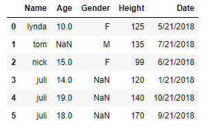
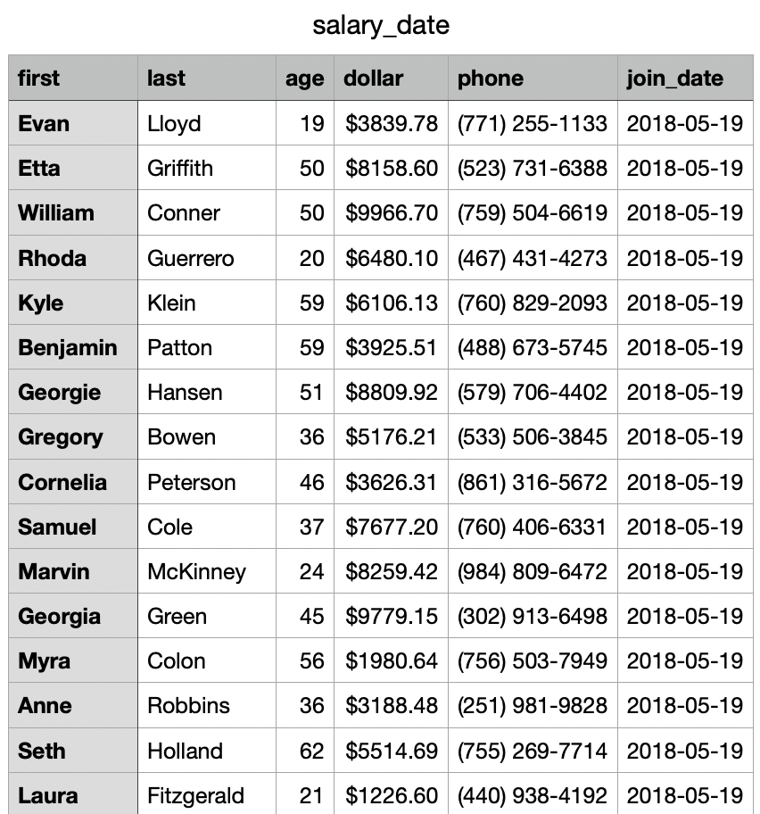
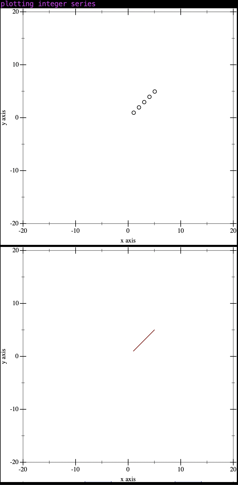
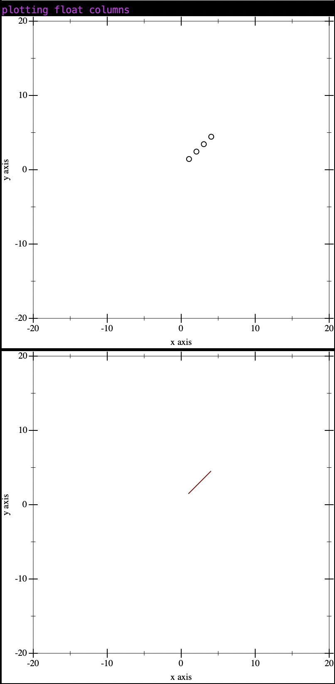
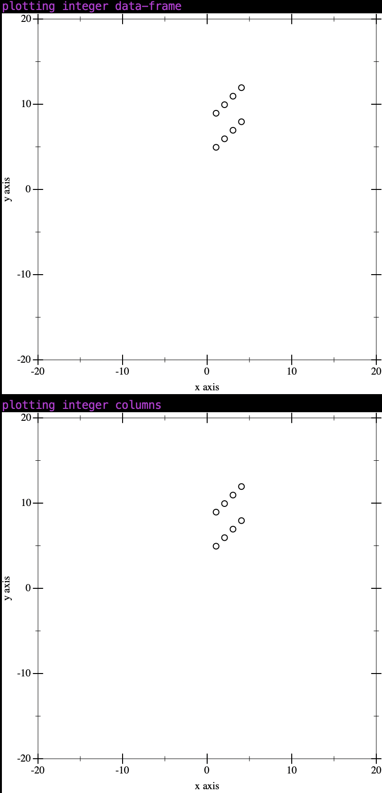

RacketFrames
================================================================================ |
→ A DataFrame implementation in the spirit of Python Pandas and R DataFrames.
A DataFrame is a two-dimensional tabular data structure used to hold data in tables with labeled rows and columns. It offers fast read access and manipulation of relatively large data sets limited by available RAM. The package also provides functions for loading and saving data from DataFrames as well as several utilities for statistical calculations, plotting, join operations, data compression and missing value handling.
In these data centric times, analytical libraries have been developed in a variety domains to work with large and complex data. Languages like Python and R or even the command line can be used to accomplish analysis tasks, but RacketFrames is especially good if you are 1) using Racket already 2) may need to integrate your solution with other Racket applications in the future or 3) enjoy functional programming.
================================================================================ |
Getting Started
A DataFrame is a two-dimensional tabular data structure that aligns data in rows and columns. The RacketFrames implementation consists of three principal components: Indexes, Series, and DataFrames. The Series data structure is a one-dimensional labelled array serving as a column in the DataFrame. The columns and rows are efficiently accessed using the Indexes generated fron the given data.

================================================================================ |
The Index is an additional derived structure constructed using the primary data and a sequence of hashable keys which label each element and provide constant time read/write access. The index is generated by reading the given data array and hashable keys in parallel and constructing a hashtable, mapping key -> (Listof Index) modeling the 1:1 mapping from the Index key to the 0..n indexes of the data vector. RacketFrames allows the user to provide their own Index or have the library generate a simple numeric index 0..n-1 (where n is the length of the given data vector) automatically. This efficient mapping results in fast constant time index operations, repeat indexed value flexibility and minimizes data repetition. Indexes don’t affect the contents of the DataFrame, only the performance of the operations. Although Indexes have a generation cost, they are needed for fast operations and data organization. Series have one Index and DataFrames index both columns and rows. All Series of a DataFrame must have an identical Index with missing Index values replaced with null resulting in a uniform C X R table.
RacketFrames supports five index types implemented with the same structure but differing data-types. SIndex (Label Index) is a suitable choice for most cases, even when the index data type is not known. IIndex IntegerIndex - IIndex FloatIndex - FIndex DatetimeIndex - DTIndex for time series indexing. DateIndex - DIndex for time series indexing using the native typed Racket Date package.
A HashTable was used for fast read and write and to minimize repeated data. Indexes can contain non-unique keys which are hashed to a list of non-negative integers that refer to the index in the series data vector to which the index belongs. Unlike the primary key of a SQL table, a DataFrame’s index does not have to be unique.
(define-type SIndex (HashTable Label (Listof Index))) (define-type IIndex (HashTable Fixnum (Listof Index))) (define-type FIndex (HashTable Flonum (Listof Index))) (define-type DTIndex (HashTable Datetime (Listof Index))) (define-type DIndex (HashTable Date (Listof Index)))
(struct LabelIndex ([index : SIndex]) #:mutable) (struct FixnumIndex ([index : IIndex]) #:mutable) (struct FlonumIndex ([index : FIndex]) #:mutable) (struct DatetimeIndex ([index : DTIndex]) #:mutable) (struct DateIndex ([index : DIndex]) #:mutable) (define-type RFIndex (U LabelIndex FixnumIndex FlonumIndex DatetimeIndex DateIndex))
The four index types supported by RacketFrames is referenced by the RFIndex type.
(LabelIndex-index (assert (build-index-from-seq (list 'a 'a 'b 'a 'a 'a 'c 'b)) LabelIndex?))
================================================================================ |
A Series is a struct consisting of a data vector of type identical to Series type and an Index for fast data access. To save the user trouble with type checking and library details, convenience methods are provided to initialize and interact with Series. With a labeled sequence of Series akin to columns of a table, we can construct a DataFrame.
RacketFrames supports six Series types.
GenSeries - Generic Series consisting of Any type of data.
NSeries - Floating Point Series consisting of Flonum data stored in the FlVector.
ISeries - Integer Series consisting of Integers.
CSeries - Categorical Series consisting of Symbols.
BSeries - Boolean Series consisting of #t or #f.
DatetimeSeries - Datetime Series consisting of the custom RacketFrames Datetime struct.
DateSeries - Datetime Series consisting of the native Racket date struct.
================================================================================ |
(define-type Column (Pair Label Series))
(define-type Columns (Listof Column))
(struct: DataFrame LabelIndex ([series : (Vectorof Series)]))
================================================================================ |
(require RacketFrames)
We can explicity define the Columns structure to initialize from or we can use the friendlier hashtable representation mapping the column name to a data sequence:
(Sequenceof Label (Sequenceof Any))
(define data-frame-from-hash (new-data-frame (hash 'a (list 1 2 3) 'b (list 3 5 6) 'c (list 3.4 5.5 6.7) 'd (list 'fizz 'buzz 'baz)))) (show-data-frame-description (data-frame-description data-frame-from-hash)) (define data-frame-from-hash-vector (new-data-frame (hash 'a '#(1 2 3) 'b '#(3 5 6) 'c '#(3.4 5.5 6.7)))) (show-data-frame-description (data-frame-description data-frame-from-hash-vector))
DataFrame::(Cols: 4, Rows: 3) |
- d: CategoricalSeries |
- a: IntegerSeries |
- b: IntegerSeries |
- c: NumericSeries |
DataFrame::(Cols: 3, Rows: 3) |
- a: IntegerSeries |
- b: IntegerSeries |
- c: NumericSeries |
(define columns-mix (list (cons 'integer-col (new-ISeries (fxvector 1 2 3 4) #:index (build-index-from-list (list 'a 'b 'c 'd)))) (cons 'categorical-col (new-CSeries (vector 'hello 'world 'fizz 'buzz) #:index (build-index-from-list (list 'a 'b 'c 'd))))))
; create new data-frame-mix from columns (define data-frame-mix (new-data-frame columns-mix)) ; write data-frame-mix to stdout (data-data-frame-write-delim data-frame-mix)
integer-col |
| categorical-col |
1 |
| hello |
2 |
| world |
3 |
| fizz |
4 |
| buzz |
; series constructors (define int-series (new-series (list 1 2 3 4 5 6))) (define gen-series (new-series (vector 'a 1 2 'c 'd 5.6))) (series-iref int-series 3) (series-print int-series) (series-iref gen-series 5) (series-print gen-series) (define int-series-with-index (new-series (list 1 2 3 4 5 6) #:index (list 'a 'b 'c 'd 'e 'f))) (define gen-series-with-index (new-series (vector 'a 1 2 'c 'd 5.6) #:index (list 6 5 4 3 2 1))) (series-index-ref int-series-with-index 'e) (series-print int-series-with-index) (series-index-ref gen-series-with-index 5) (series-print gen-series-with-index) (define columns-from-series (list (cons 'integer-col int-series) (cons 'gen-col gen-series) (cons 'integer-series-with-index-col int-series-with-index) (cons 'gen-series-with-index-col gen-series-with-index)) )
; create new data-frame-mix from columns (define data-frame-columns-from-series (new-data-frame columns-from-series)) ; write data-frame-mix to stdout (data-frame-write-delim data-frame-columns-from-series)
integer-col |
| gen-col |
| integer-series-with-index-col |
| gen-series-with-index-col |
1 |
| a |
| 1 |
| a |
2 |
| 1 |
| 2 |
| 1 |
3 |
| 2 |
| 3 |
| 2 |
4 |
| c |
| 4 |
| c |
5 |
| d |
| 5 |
| d |
6 |
| 5.6 |
| 6 |
| 5.6 |
Initialize DataFrame from CSV file.

; no schema (define salary-data-frame-csv-no-schema (load-csv-file "../sample-csv/salary_date.csv" #:schema #f)) (data-frame-head salary-data-frame-csv-no-schema)
first |
| last |
| age |
| dollar |
| phone |
| join_date |
Evan |
| Lloyd |
| 19 |
| $3839.78 |
| (771) 255-1133 |
| (Datetime (Date 2018 5 19) (Time 0 0 0 0 0)) |
Etta |
| Griffith |
| 50 |
| $8158.60 |
| (523) 731-6388 |
| (Datetime (Date 2018 5 19) (Time 0 0 0 0 0)) |
William |
| Conner |
| 50 |
| $9966.70 |
| (759) 504-6619 |
| (Datetime (Date 2018 5 19) (Time 0 0 0 0 0)) |
Rhoda |
| Guerrero |
| 20 |
| $6480.10 |
| (467) 431-4273 |
| (Datetime (Date 2018 5 19) (Time 0 0 0 0 0)) |
Kyle |
| Klein |
| 59 |
| $6106.13 |
| (760) 829-2093 |
| (Datetime (Date 2018 5 19) (Time 0 0 0 0 0)) |
Benjamin |
| Patton |
| 59 |
| $3925.51 |
| (488) 673-5745 |
| (Datetime (Date 2018 5 19) (Time 0 0 0 0 0)) |
Georgie |
| Hansen |
| 51 |
| $8809.92 |
| (579) 706-4402 |
| (Datetime (Date 2018 5 19) (Time 0 0 0 0 0)) |
Gregory |
| Bowen |
| 36 |
| $5176.21 |
| (533) 506-3845 |
| (Datetime (Date 2018 5 19) (Time 0 0 0 0 0)) |
Cornelia |
| Peterson |
| 46 |
| $3626.31 |
| (861) 316-5672 |
| (Datetime (Date 2018 5 19) (Time 0 0 0 0 0)) |
Samuel |
| Cole |
| 37 |
| $7677.20 |
| (760) 406-6331 |
| (Datetime (Date 2018 5 19) (Time 0 0 0 0 0)) |
(data-frame-names salary-data-frame-csv-no-schema)
'(first last age dollar phone join_date) |
(data-frame-dim salary-data-frame-csv-no-schema)
(Dim 200 6) |
(show-data-frame-description (data-frame-description salary-data-frame-csv-no-schema))
DataFrame::(Cols: 6, Rows: 200) |
- first: CategoricalSeries |
- last: CategoricalSeries |
- age: IntegerSeries |
- dollar: CategoricalSeries |
- phone: CategoricalSeries |
- join_date: DatetimeSeries |
(data-frame-head (data-frame-remove salary-data-frame-csv-no-schema (list 'first 'age)))
last dollar phone join_date |
Lloyd $3839.78 (771) 255-1133 (Datetime (Date 2018 5 19) (Time 0 0 0 0 0)) |
Griffith $8158.60 (523) 731-6388 (Datetime (Date 2018 5 19) (Time 0 0 0 0 0)) |
Conner $9966.70 (759) 504-6619 (Datetime (Date 2018 5 19) (Time 0 0 0 0 0)) |
Guerrero $6480.10 (467) 431-4273 (Datetime (Date 2018 5 19) (Time 0 0 0 0 0)) |
Klein $6106.13 (760) 829-2093 (Datetime (Date 2018 5 19) (Time 0 0 0 0 0)) |
Patton $3925.51 (488) 673-5745 (Datetime (Date 2018 5 19) (Time 0 0 0 0 0)) |
Hansen $8809.92 (579) 706-4402 (Datetime (Date 2018 5 19) (Time 0 0 0 0 0)) |
Bowen $5176.21 (533) 506-3845 (Datetime (Date 2018 5 19) (Time 0 0 0 0 0)) |
Peterson $3626.31 (861) 316-5672 (Datetime (Date 2018 5 19) (Time 0 0 0 0 0)) |
Cole $7677.20 (760) 406-6331 (Datetime (Date 2018 5 19) (Time 0 0 0 0 0)) |
(data-frame-head (data-frame-project salary-data-frame-csv-no-schema (list 'first 'last 'dollar)))
first last dollar |
Evan Lloyd $3839.78 |
Etta Griffith $8158.60 |
William Conner $9966.70 |
Rhoda Guerrero $6480.10 |
Kyle Klein $6106.13 |
Benjamin Patton $3925.51 |
Georgie Hansen $8809.92 |
Gregory Bowen $5176.21 |
Cornelia Peterson $3626.31 |
Samuel Cole $7677.20 |
(data-frame-head (data-frame-replace salary-data-frame-csv-no-schema (cons 'salary (new-CSeries (make-vector 200 '$0.00)))))
first last age dollar phone join_date |
Evan Lloyd 19 $3839.78 (771) 255-1133 (Datetime (Date 2018 5 19) (Time 0 0 0 0 0)) |
Etta Griffith 50 $8158.60 (523) 731-6388 (Datetime (Date 2018 5 19) (Time 0 0 0 0 0)) |
William Conner 50 $9966.70 (759) 504-6619 (Datetime (Date 2018 5 19) (Time 0 0 0 0 0)) |
Rhoda Guerrero 20 $6480.10 (467) 431-4273 (Datetime (Date 2018 5 19) (Time 0 0 0 0 0)) |
Kyle Klein 59 $6106.13 (760) 829-2093 (Datetime (Date 2018 5 19) (Time 0 0 0 0 0)) |
Benjamin Patton 59 $3925.51 (488) 673-5745 (Datetime (Date 2018 5 19) (Time 0 0 0 0 0)) |
Georgie Hansen 51 $8809.92 (579) 706-4402 (Datetime (Date 2018 5 19) (Time 0 0 0 0 0)) |
Gregory Bowen 36 $5176.21 (533) 506-3845 (Datetime (Date 2018 5 19) (Time 0 0 0 0 0)) |
Cornelia Peterson 46 $3626.31 (861) 316-5672 (Datetime (Date 2018 5 19) (Time 0 0 0 0 0)) |
Samuel Cole 37 $7677.20 (760) 406-6331 (Datetime (Date 2018 5 19) (Time 0 0 0 0 0)) |
(data-frame-head (data-frame-replace salary-data-frame-csv-no-schema (cons 'dollar (new-CSeries (make-vector 200 '$0.00)))))
first last age dollar phone join_date |
Evan Lloyd 19 $0.00 (771) 255-1133 (Datetime (Date 2018 5 19) (Time 0 0 0 0 0)) |
Etta Griffith 50 $0.00 (523) 731-6388 (Datetime (Date 2018 5 19) (Time 0 0 0 0 0)) |
William Conner 50 $0.00 (759) 504-6619 (Datetime (Date 2018 5 19) (Time 0 0 0 0 0)) |
Rhoda Guerrero 20 $0.00 (467) 431-4273 (Datetime (Date 2018 5 19) (Time 0 0 0 0 0)) |
Kyle Klein 59 $0.00 (760) 829-2093 (Datetime (Date 2018 5 19) (Time 0 0 0 0 0)) |
Benjamin Patton 59 $0.00 (488) 673-5745 (Datetime (Date 2018 5 19) (Time 0 0 0 0 0)) |
Georgie Hansen 51 $0.00 (579) 706-4402 (Datetime (Date 2018 5 19) (Time 0 0 0 0 0)) |
Gregory Bowen 36 $0.00 (533) 506-3845 (Datetime (Date 2018 5 19) (Time 0 0 0 0 0)) |
Cornelia Peterson 46 $0.00 (861) 316-5672 (Datetime (Date 2018 5 19) (Time 0 0 0 0 0)) |
Samuel Cole 37 $0.00 (760) 406-6331 (Datetime (Date 2018 5 19) (Time 0 0 0 0 0)) |
(data-frame-head (data-frame-extend salary-data-frame-csv-no-schema (cons 'state (new-CSeries (make-vector 200 'CA)))))
first last age dollar phone join_date state |
Evan Lloyd 19 $3839.78 (771) 255-1133 (Datetime (Date 2018 5 19) (Time 0 0 0 0 0)) CA |
Etta Griffith 50 $8158.60 (523) 731-6388 (Datetime (Date 2018 5 19) (Time 0 0 0 0 0)) CA |
William Conner 50 $9966.70 (759) 504-6619 (Datetime (Date 2018 5 19) (Time 0 0 0 0 0)) CA |
Rhoda Guerrero 20 $6480.10 (467) 431-4273 (Datetime (Date 2018 5 19) (Time 0 0 0 0 0)) CA |
Kyle Klein 59 $6106.13 (760) 829-2093 (Datetime (Date 2018 5 19) (Time 0 0 0 0 0)) CA |
Benjamin Patton 59 $3925.51 (488) 673-5745 (Datetime (Date 2018 5 19) (Time 0 0 0 0 0)) CA |
Georgie Hansen 51 $8809.92 (579) 706-4402 (Datetime (Date 2018 5 19) (Time 0 0 0 0 0)) CA |
Gregory Bowen 36 $5176.21 (533) 506-3845 (Datetime (Date 2018 5 19) (Time 0 0 0 0 0)) CA |
Cornelia Peterson 46 $3626.31 (861) 316-5672 (Datetime (Date 2018 5 19) (Time 0 0 0 0 0)) CA |
Samuel Cole 37 $7677.20 (760) 406-6331 (Datetime (Date 2018 5 19) (Time 0 0 0 0 0)) CA |
================================================================================ |
Table of Contents
1 Series
One-dimensional ndarray with axis labels including time series.
Labels need not be unique but must be a hashable type. The object supports both integer- and label-based indexing and provides a host of methods for performing operations involving the index. Statistical methods from ndarray have been overridden to automatically exclude missing data (currently represented as NaN).
Operations between Series (+, -, /, , *) align values based on their associated index values– they need not be the same length. The result index will be the sorted union of the two indexes.
1.1 Integer Series
← Integer Series is abbreviated to ISeries in RacketFrames.
(provide (struct-out ISeries) ISeries-index RFFixnum RFFixnum? (rename-out [GroupHash iseries-grouphash] [DEFAULT_NULL_VALUE ISERIES_DEFAULT_NULL_VALUE])) (define-type RFFixnum (U Fixnum RFNoData)) (define-predicate RFFixnum? RFFixnum) (define DEFAULT_NULL_VALUE : Fixnum 0) ;; Integer series optimized with use of Fixnum. (struct ISeries ([index : (Option RFIndex)] [data : (Vectorof RFFixnum)] ; when the null-value is not a fixnum?, the fixnum-null-value is set to 0 [null-value : RFNULL] ; needed for type checking purposes and to do proper arithmetic operations in numeric series [fixnum-null-value : Fixnum] ; encode data by element count to optimze memory storage and read/write operations ; when data vector lacks variety [encoded : Boolean] [data-count-encoded : (Option (Listof (Pairof Any Real)))]) #:mutable #:transparent)
1.1.1 new-ISeries
procedure
(new-ISeries arg0 arg1 arg2 arg3 arg4) → ISeries
arg0 : (U FxVector (Vectorof Fixnum) (Sequenceof Fixnum) (Sequenceof RFFixnum)) arg1 : (#:index (Option (U (Sequenceof IndexDataType) RFIndex))) arg2 : (#:fill-null RFNULL) arg3 : (#:sort Boolean) arg4 : (#:encode Boolean)
1.1.2 set-ISeries-index
procedure
(set-ISeries-index arg0 arg1) → ISeries
arg0 : ISeries arg1 : (U (Sequenceof IndexDataType) RFIndex)
1.1.3 set-ISeries-null-value
procedure
(set-ISeries-null-value arg0 arg1) → ISeries
arg0 : ISeries arg1 : RFNULL
1.1.4 set-ISeries-fixnum-null-value-inplace
procedure
(set-ISeries-fixnum-null-value-inplace arg0 arg1) → Void arg0 : ISeries arg1 : Fixnum
1.1.5 iseries-iref
procedure
(iseries-iref arg0 arg1) → (Listof RFFixnum)
arg0 : ISeries arg1 : (Listof Index)
1.1.6 iseries-loc-boolean
procedure
(iseries-loc-boolean arg0 arg1) → (U RFFixnum ISeries)
arg0 : ISeries arg1 : (Listof Boolean)
1.1.7 iseries-loc
procedure
(iseries-loc arg0 arg1) → (U RFFixnum ISeries)
arg0 : ISeries arg1 : (U Label (Listof Label) (Listof Boolean))
1.1.8 iseries-loc-multi-index
procedure
(iseries-loc-multi-index arg0 arg1) → (U RFFixnum ISeries)
arg0 : ISeries arg1 : (U (Listof String) ListofListofString)
1.1.9 iseries-iloc
procedure
(iseries-iloc arg0 arg1) → (U RFFixnum ISeries)
arg0 : ISeries arg1 : (U Index (Listof Index))
1.1.10 iseries-iloc-range
procedure
(iseries-iloc-range arg0 arg1 arg2) → ISeries
arg0 : ISeries arg1 : Index arg2 : Index
1.1.11 iseries-index-ref
procedure
(iseries-index-ref arg0 arg1) → (Listof RFFixnum)
arg0 : ISeries arg1 : IndexDataType
1.1.12 iseries-range
procedure
(iseries-range arg0 arg1 arg2) → (Vectorof RFFixnum)
arg0 : ISeries arg1 : Index arg2 : Index
1.1.13 iseries-length
procedure
(iseries-length arg0) → Index
arg0 : ISeries
1.1.14 iseries-referencer
procedure
(iseries-referencer arg0) → (Index -> RFFixnum)
arg0 : ISeries
1.1.15 iseries-data
procedure
(iseries-data arg0) → (Vectorof RFFixnum)
arg0 : ISeries
1.1.16 in-iseries
procedure
(in-iseries arg0 arg1) → Boolean
arg0 : RFFixnum arg1 : ISeries
1.1.17 iseries-index
procedure
(iseries-index arg0) → (U False RFIndex)
arg0 : ISeries
1.1.18 iseries-null-value
procedure
(iseries-null-value arg0) → Fixnum
arg0 : ISeries
1.1.19 iseries-custom-null-value
procedure
(iseries-custom-null-value arg0) → RFNULL
arg0 : ISeries
1.1.20 iseries-value-is-null?
procedure
(iseries-value-is-null? arg0 arg1) → Boolean
arg0 : ISeries arg1 : Fixnum
1.1.21 iseries-groupby
procedure
(iseries-groupby arg0 arg1) → GroupHash
arg0 : ISeries arg1 : (#:by-value Boolean)
1.1.22 apply-agg-iseries
procedure
(apply-agg-iseries arg0 arg1) → GenSeries
arg0 : Symbol arg1 : GroupHash
1.1.23 map/is
procedure
(map/is arg0 arg1) → ISeries
arg0 : ISeries arg1 : (Fixnum -> Fixnum)
1.1.24 bop/is
procedure
(bop/is arg0 arg1 arg2) → ISeries
arg0 : ISeries arg1 : ISeries arg2 : (Fixnum Fixnum -> Fixnum)
1.1.25 comp/is
procedure
(comp/is arg0 arg1 arg2) → BSeries
arg0 : ISeries arg1 : ISeries arg2 : (Fixnum Fixnum -> Boolean)
1.1.26 +/is
procedure
(+/is arg0 arg1) → ISeries
arg0 : ISeries arg1 : ISeries
1.1.27 -/is
procedure
(-/is arg0 arg1) → ISeries
arg0 : ISeries arg1 : ISeries
1.1.28 */is
procedure
(*/is arg0 arg1) → ISeries
arg0 : ISeries arg1 : ISeries
1.1.29 //is
procedure
(//is arg0 arg1) → ISeries
arg0 : ISeries arg1 : ISeries
1.1.30 %/is
procedure
(%/is arg0 arg1) → ISeries
arg0 : ISeries arg1 : ISeries
1.1.31 r/is
procedure
(r/is arg0 arg1) → ISeries
arg0 : ISeries arg1 : ISeries
1.1.32 +./is
procedure
(+./is arg0 arg1) → ISeries
arg0 : ISeries arg1 : Fixnum
1.1.33 -./is
procedure
(-./is arg0 arg1) → ISeries
arg0 : ISeries arg1 : Fixnum
1.1.34 *./is
procedure
(*./is arg0 arg1) → ISeries
arg0 : ISeries arg1 : Fixnum
1.1.35 /./is
procedure
(/./is arg0 arg1) → ISeries
arg0 : ISeries arg1 : Fixnum
1.1.36 %./is
procedure
(%./is arg0 arg1) → ISeries
arg0 : ISeries arg1 : Fixnum
1.1.37 r./is
procedure
(r./is arg0 arg1) → ISeries
arg0 : ISeries arg1 : Fixnum
1.1.38 >/is
procedure
(>/is arg0 arg1) → BSeries
arg0 : ISeries arg1 : ISeries
1.1.39 </is
procedure
(</is arg0 arg1) → BSeries
arg0 : ISeries arg1 : ISeries
1.1.40 >=/is
procedure
(>=/is arg0 arg1) → BSeries
arg0 : ISeries arg1 : ISeries
1.1.41 <=/is
procedure
(<=/is arg0 arg1) → BSeries
arg0 : ISeries arg1 : ISeries
1.1.42 =/is
procedure
(=/is arg0 arg1) → BSeries
arg0 : ISeries arg1 : ISeries
1.1.43 !=/is
procedure
(!=/is arg0 arg1) → BSeries
arg0 : ISeries arg1 : ISeries
1.1.44 >./is
procedure
(>./is arg0 arg1) → BSeries
arg0 : ISeries arg1 : Fixnum
1.1.45 <./is
procedure
(<./is arg0 arg1) → BSeries
arg0 : ISeries arg1 : Fixnum
1.1.46 >=./is
procedure
(>=./is arg0 arg1) → BSeries
arg0 : ISeries arg1 : Fixnum
1.1.47 <=./is
procedure
(<=./is arg0 arg1) → BSeries
arg0 : ISeries arg1 : Fixnum
1.1.48 =./is
procedure
(=./is arg0 arg1) → BSeries
arg0 : ISeries arg1 : Fixnum
1.1.49 !=./is
procedure
(!=./is arg0 arg1) → BSeries
arg0 : ISeries arg1 : Fixnum
1.1.50 apply-agg-is
procedure
(apply-agg-is arg0 arg1) → GenericType
arg0 : Symbol arg1 : ISeries
1.1.51 apply-stat-is
procedure
(apply-stat-is arg0 arg1) → Real
arg0 : Symbol arg1 : ISeries
1.1.52 iseries-print
procedure
(iseries-print arg0 arg1) → Void
arg0 : ISeries arg1 : (#:output-port Output-Port)
1.1.53 iseries-filter
procedure
(iseries-filter arg0 arg1) → ISeries
arg0 : ISeries arg1 : (RFFixnum -> Boolean)
1.1.54 iseries-filter-not
procedure
(iseries-filter-not arg0 arg1) → ISeries
arg0 : ISeries arg1 : (RFFixnum -> Boolean)
1.1.55 fxvector->list
procedure
(fxvector->list arg0 arg1) → (Listof Fixnum)
arg0 : FxVector arg1 : Fixnum
1.1.56 list->fxvector
procedure
(list->fxvector arg0) → FxVector
arg0 : (Listof Fixnum)
1.1.57 iseries-notna
procedure
(iseries-notna arg0) → ISeries
arg0 : ISeries
1.1.58 iseries-isna
procedure
(iseries-isna arg0) → ISeries
arg0 : ISeries
1.1.59 make-RFFixnum-vector
procedure
(make-RFFixnum-vector arg0) → (Vectorof RFFixnum)
arg0 : (U (Sequenceof Fixnum) (Sequenceof RFFixnum))
1.1.60 derive-fixnum-value
procedure
(derive-fixnum-value arg0 arg1) → Fixnum
arg0 : ISeries arg1 : RFFixnum
1.1.61 Integer Series Builder
(struct-out ISeriesBuilder) (struct: ISeriesBuilder ([index : Index] [data : (Vectorof RFFixnum)]) #:mutable)
1.1.62 new-ISeriesBuilder
procedure
(new-ISeriesBuilder arg0) → ISeriesBuilder
arg0 : (U Void Index)
1.1.63 append-ISeriesBuilder
procedure
(append-ISeriesBuilder arg0 arg1) → Void
arg0 : ISeriesBuilder arg1 : (U RFFixnum String)
1.1.64 complete-ISeriesBuilder
procedure
(complete-ISeriesBuilder arg0) → ISeries
arg0 : ISeriesBuilder
1.1.65 Example Usage
procedure
(new-ISeries data label) → ISeries?
data : (Vectorof Fixnum) label : (Option (U (Listof Label) SIndex))
(define series-integer (new-ISeries (fxvector 1 2 3 4) #:index (build-index-from-list (list 'a 'b 'c 'd))))
procedure
(iseries-iref iseries idx) → Fixnum?
iseries : ISeries idx : Index
(define series-integer (new-ISeries (fxvector 1 2 3 4) #:index (build-index-from-list (list 'a 'b 'c 'd)))) (iseries-iref series-integer 0) ; 1 (iseries-iref series-integer 1) ; 2
procedure
(iseries-label-ref iseries label) → Fixnum?
iseries : ISeries label : Label
(define series-integer (new-ISeries (fxvector 1 2 3 4) #:index (build-index-from-list (list 'a 'b 'c 'd)))) (iseries-label-ref series-integer 'd) ; 4 (iseries-label-ref series-integer 'c) ; 3
procedure
(iseries-range iseries pos) → (Vectorof Fixnum)
iseries : ISeries pos : Index
(define series-integer (new-ISeries (list 1 2 3 4) #:index (build-index-from-list (list 'a 'b 'c 'd)))) (iseries-range series-integer 2) ; (vector 1 2)
procedure
(iseries-length iseries) → Index
iseries : ISeries
(define series-integer (new-ISeries (fxvector 1 2 3 4) #:index (build-index-from-list (list 'a 'b 'c 'd)))) (iseries-length series-integer) ; 4
procedure
(iseries-referencer iseries) → (Index -> Fixnum)
iseries : ISeries
(define series-integer (new-ISeries (list 1 2 3 4) #:index (build-index-from-list (list 'a 'b 'c 'd)))) ((iseries-referencer series-integer) 0) ; 1 ((iseries-referencer series-integer) 1) ; 2
procedure
(iseries-data iseries) → (Vectorof Fixnum)
iseries : ISeries
(define series-integer (new-ISeries (fxvector 1 2 3 4) #:index (build-index-from-list (list 'a 'b 'c 'd)))) (iseries-data series-integer) ; (vector 1 2 3 4)
procedure
(map/is iseries fn) → ISeries
iseries : ISeries fn : (Fixnum -> Fixnum)
(: fixnum-vector (Vectorof Fixnum)) (define fixnum-vector (vector 1 2 3 4)) (define series-integer (new-ISeries fixnum-vector #:index (build-index-from-list (list 'a 'b 'c 'd)))) (iseries-data (map/is series-integer (λ: ((x : Fixnum)) (unsafe-fx+ x 1)))) ; (vector 2 3 4 5)
procedure
(bop/is iseries iseries-2 fn) → ISeries
iseries : ISeries iseries-2 : ISeries fn : (Fixnum Fixnum -> Fixnum)
(define series-integer (new-ISeries (fxvector 1 2 3 4))) (define series-integer-2 (new-ISeries (fxvector 5 6 7 8))) (iseries-data (bop/is series-integer series-integer-2 (λ: ((x : Fixnum) (y : Fixnum)) (unsafe-fx+ x y)))) ; (ISeries 6 8 10 12)
procedure
(comp/is iseries iseries-2 fn) → BSeries
iseries : ISeries iseries-2 : ISeries fn : (Fixnum Fixnum -> Boolean)
(define series-integer (new-ISeries (fxvector 1 2 3 4))) (define series-integer-2 (new-ISeries (fxvector 5 6 7 8))) (iseries-data (comp/is series-integer series-integer-2 (λ: ((x : Fixnum) (y : Fixnum)) (unsafe-fx> x y)))) ; (BSeries #f #f #f #f)
procedure
(+/is iseries iseries-2) → ISeries
iseries : ISeries iseries-2 : ISeries
(define series-integer (new-ISeries (fxvector 1 2 3 4))) (define series-integer-2 (new-ISeries (list 5 6 7 8))) (iseries-data (+/is series-integer series-integer-2)) ; (vector 6 8 10 12)
procedure
(+/is iseries iseries-2) → ISeries
iseries : ISeries iseries-2 : ISeries
(define series-integer (new-ISeries (list 1 2 3 4))) (define series-integer-2 (new-ISeries (list 5 6 7 8))) (iseries-data (-/is series-integer series-integer-2)) ; (vector -4 -4 -4 -4)
procedure
(*/is iseries iseries-2) → ISeries
iseries : ISeries iseries-2 : ISeries
(define series-integer (new-ISeries (fxvector 1 2 3 4))) (define series-integer-2 (new-ISeries (fxvector 5 6 7 8))) (iseries-data (*/is series-integer series-integer-2)) ; (vector 5 12 21 32)
procedure
(//is iseries iseries-2) → ISeries
iseries : ISeries iseries-2 : ISeries
(define series-integer (new-ISeries (list 1 2 3 4))) (define series-integer-2 (new-ISeries (list 5 6 7 8))) (iseries-data (//is series-integer series-integer-2)) ; (vector 0 0 0 0)
procedure
(%/is iseries iseries-2) → ISeries
iseries : ISeries iseries-2 : ISeries
(define series-integer (new-ISeries (list 1 2 3 4))) (define series-integer-2 (new-ISeries (list 5 6 7 8))) (iseries-data (%/is series-integer series-integer-2)) ; (vector 1 2 3 4)
procedure
(r/is iseries iseries-2) → ISeries
iseries : ISeries iseries-2 : ISeries
(define series-integer (new-ISeries (list 1 2 3 4))) (define series-integer-2 (new-ISeries (list 5 6 7 8))) (iseries-data (r/is series-integer series-integer-2)) ; (vector 1 2 3 4)
procedure
(+./is iseries num) → ISeries
iseries : ISeries num : Fixnum
(define series-integer (new-ISeries (list 1 2 3 4))) (iseries-data (+./is series-integer 2)) ; (vector 3 4 5 6)
procedure
(-./is iseries num) → ISeries
iseries : ISeries num : Fixnum
(define series-integer (new-ISeries (fxvector 1 2 3 4))) (iseries-data (-./is series-integer 2)) ; (vector -1 0 1 2)
procedure
(*./is iseries num) → ISeries
iseries : ISeries num : Fixnum
(define series-integer (new-ISeries (fxvector 1 2 3 4))) (iseries-data (*./is series-integer 2)) ; (vector 2 3 6 8)
procedure
(/./is iseries num) → ISeries
iseries : ISeries num : Fixnum
(define series-integer (new-ISeries (fxvector 1 2 3 4))) (iseries-data (/./is series-integer 2)) ; (vector 0 1 1 2)
procedure
(%./is iseries num) → ISeries
iseries : ISeries num : Fixnum
(define series-integer (new-ISeries (fxvector 1 2 3 4))) (iseries-data (%./is series-integer 2)) ; (vector 1 0 1 0)
procedure
(r./is iseries num) → ISeries
iseries : ISeries num : Fixnum
(define series-integer (new-ISeries (fxvector 1 2 3 4))) (iseries-data (r./is series-integer 2)) ; (vector 1 0 1 0)
procedure
(>/is iseries iseries-2) → BSeries
iseries : ISeries iseries-2 : ISeries
(define series-integer (new-ISeries (fxvector 1 2 3 4))) (define series-integer-2 (new-ISeries (fxvector 5 6 7 8))) (bseries-data (>/is series-integer series-integer-2)) ; (vector #f #f #f #f)
procedure
(</is iseries iseries-2) → BSeries
iseries : ISeries iseries-2 : ISeries
(define series-integer (new-ISeries (fxvector 1 2 3 4))) (define series-integer-2 (new-ISeries (fxvector 5 6 7 8))) (bseries-data (</is series-integer series-integer-2)) ; (vector #f #f #f #f)
procedure
(>=/is iseries iseries-2) → BSeries
iseries : ISeries iseries-2 : ISeries
(define series-integer (new-ISeries (list 1 2 3 4))) (define series-integer-2 (new-ISeries (list 5 6 7 8))) (bseries-data (>=/is series-integer series-integer-2)) ; (vector #f #f #f #f)
procedure
(<=/is iseries iseries-2) → BSeries
iseries : ISeries iseries-2 : ISeries
(define series-integer (new-ISeries (fxvector 1 2 3 4))) (define series-integer-2 (new-ISeries (fxvector 5 6 7 8))) (bseries-data (<=/is series-integer series-integer-2)) ; (vector #t #t #t #t)
procedure
(=/is iseries iseries-2) → BSeries
iseries : ISeries iseries-2 : ISeries
(define series-integer (new-ISeries (fxvector 1 2 3 4))) (define series-integer-2 (new-ISeries (fxvector 5 6 7 8))) (bseries-data (=/is series-integer series-integer-2)) ; (vector #f #f #f #f)
procedure
(!=/is iseries iseries-2) → BSeries
iseries : ISeries iseries-2 : ISeries
(define series-integer (new-ISeries (fxvector 1 2 3 4))) (define series-integer-2 (new-ISeries (fxvector 5 6 7 8))) (bseries-data (!=/is series-integer series-integer-2)) ; (vector #t #t #t #t)
procedure
(apply-agg-is func iseries) → Real
func : Symbol iseries : ISeries
(define series-integer (new-ISeries (fxvector 1 2 3 4))) (apply-agg-is 'sum series-integer) ; 10 (apply-agg-is 'mean series-integer) ; 10/4 (apply-agg-is 'count series-integer) ; 4 (apply-agg-is 'min series-integer) ; 1 (apply-agg-is 'max series-integer) ; 4
procedure
(apply-stat-is func iseries) → Real
func : Symbol iseries : ISeries
(define series-integer (new-ISeries (fxvector 1 2 3 4))) (apply-stat-is 'variance series-integer) ; 5/4 (apply-stat-is 'stddev series-integer) ; 1.118033988749895 (apply-stat-is 'skewness series-integer) ; 0.0
1.2 Numeric Series
← Numeric Series is abbreviated to NSeries in RacketFrames.
(provide (struct-out NSeries) NSeries-index (rename-out [GroupHash nseries-grouphash] [DEFAULT_NULL_VALUE NSERIES_DEFAULT_NULL_VALUE])) (struct: Summary ([mean : Flonum] [variance : Flonum] [min : Flonum] [max : Flonum] [count : Natural] [nans : Natural])) (define DEFAULT_NULL_VALUE : Flonum +nan.0) ;; An NSeries is an optimized Series for computation over vectors of Flonum ;; i.e., NSeries should be faster then (Series Flonum) (struct: NSeries ([index : (Option RFIndex)] [data : FlVector] ; when the null-value is not a fixnum?, the fixnum-null-value is set to 0 [null-value : RFNULL] ; needed for type checking purposes and to do proper arithmetic operations in numeric series [flonum-null-value : Flonum] ; encode data by element count to optimze memory storage and read/write operations ; when data vector lacks variety [encoded : Boolean] [data-count-encoded : (Option (Listof (Pairof Any Real)))]) #:mutable #:transparent) ; When working with very large values that occur frequently, ; it can be more performant to use the ISeries-Nominals form ; which will only keep one copy of the Fixnum and maintain a ; a light weight vector of index to reference to the nominals. ; categorical series are constructed in nominal form by default, ; but with other series types it is not (struct: NSeries-Nominals ([index : (Option RFIndex)] [data : (Vectorof Index)] [nominals : FlVector] [null-value : RFNULL]) #:mutable #:transparent)
1.2.1 new-NSeries
procedure
(new-NSeries arg0 arg1 arg2 arg3 arg4) → NSeries
arg0 : (U (Sequenceof Flonum) FlVector) arg1 : (#:index (Option (U (Sequenceof IndexDataType) RFIndex))) arg2 : (#:fill-null RFNULL) arg3 : (#:sort Boolean) arg4 : (#:encode Boolean)
1.2.2 set-NSeries-index
procedure
(set-NSeries-index arg0 arg1) → NSeries
arg0 : NSeries arg1 : (U (Listof IndexDataType) RFIndex)
1.2.3 set-NSeries-null-value
procedure
(set-NSeries-null-value arg0 arg1) → NSeries
arg0 : NSeries arg1 : RFNULL
1.2.4 nseries-custom-null-value
procedure
(nseries-custom-null-value arg0) → RFNULL
arg0 : NSeries
1.2.5 nseries-null-value
procedure
(nseries-null-value arg0) → Flonum
arg0 : NSeries
1.2.6 set-NSeries-flonum-null-value-inplace
procedure
(set-NSeries-flonum-null-value-inplace arg0 arg1) → Void arg0 : NSeries arg1 : Flonum
1.2.7 nseries-iref
procedure
(nseries-iref arg0 arg1) → (Listof Flonum)
arg0 : NSeries arg1 : (Listof Index)
1.2.8 nseries-loc-boolean
procedure
(nseries-loc-boolean arg0 arg1) → (U Flonum NSeries)
arg0 : NSeries arg1 : (Listof Boolean)
1.2.9 nseries-loc
procedure
(nseries-loc arg0 arg1) → (U Flonum NSeries)
arg0 : NSeries arg1 : (U Label (Listof Label) (Listof Boolean))
1.2.10 nseries-loc-multi-index
procedure
(nseries-loc-multi-index arg0 arg1) → (U Flonum NSeries)
arg0 : NSeries arg1 : (U (Listof String) ListofListofString)
1.2.11 nseries-iloc
procedure
(nseries-iloc arg0 arg1) → (U Flonum NSeries)
arg0 : NSeries arg1 : (U Index (Listof Index))
1.2.12 nseries-iloc-range
procedure
(nseries-iloc-range arg0 arg1 arg2) → NSeries
arg0 : NSeries arg1 : Index arg2 : Index
1.2.13 nseries-index-ref
procedure
(nseries-index-ref arg0 arg1) → (Listof Flonum)
arg0 : NSeries arg1 : IndexDataType
1.2.14 nseries-range
procedure
(nseries-range arg0 arg1) → FlVector
arg0 : NSeries arg1 : Index
1.2.15 nseries-referencer
procedure
(nseries-referencer arg0) → (Index -> Flonum)
arg0 : NSeries
1.2.16 nseries-length
procedure
(nseries-length arg0) → Index
arg0 : NSeries
1.2.17 nseries-data
procedure
(nseries-data arg0) → FlVector
arg0 : NSeries
1.2.18 in-nseries
procedure
(in-nseries arg0 arg1) → Boolean
arg0 : Flonum arg1 : NSeries
1.2.19 nseries-groupby
procedure
(nseries-groupby arg0 arg1) → GroupHash
arg0 : NSeries arg1 : (#:by-value Boolean)
1.2.20 apply-agg-nseries
procedure
(apply-agg-nseries arg0 arg1) → GenSeries
arg0 : Symbol arg1 : GroupHash
1.2.21 nseries-index
procedure
(nseries-index arg0) → (U False RFIndex)
arg0 : NSeries
1.2.22 map/ns
procedure
(map/ns arg0 arg1) → NSeries
arg0 : NSeries arg1 : (Flonum -> Flonum)
1.2.23 bop/ns
procedure
(bop/ns arg0 arg1 arg2) → NSeries
arg0 : NSeries arg1 : NSeries arg2 : (Flonum Flonum -> Flonum)
1.2.24 +/ns
procedure
(+/ns arg0 arg1) → NSeries
arg0 : NSeries arg1 : NSeries
1.2.25 -/ns
procedure
(-/ns arg0 arg1) → NSeries
arg0 : NSeries arg1 : NSeries
1.2.26 */ns
procedure
(*/ns arg0 arg1) → NSeries
arg0 : NSeries arg1 : NSeries
1.2.27 //ns
procedure
(//ns arg0 arg1) → NSeries
arg0 : NSeries arg1 : NSeries
1.2.28 >/ns
procedure
(>/ns arg0 arg1) → BSeries
arg0 : NSeries arg1 : NSeries
1.2.29 </ns
procedure
(</ns arg0 arg1) → BSeries
arg0 : NSeries arg1 : NSeries
1.2.30 >=/ns
procedure
(>=/ns arg0 arg1) → BSeries
arg0 : NSeries arg1 : NSeries
1.2.31 <=/ns
procedure
(<=/ns arg0 arg1) → BSeries
arg0 : NSeries arg1 : NSeries
1.2.32 =/ns
procedure
(=/ns arg0 arg1) → BSeries
arg0 : NSeries arg1 : NSeries
1.2.33 !=/ns
procedure
(!=/ns arg0 arg1) → BSeries
arg0 : NSeries arg1 : NSeries
1.2.34 +./ns
procedure
(+./ns arg0 arg1) → NSeries
arg0 : NSeries arg1 : Flonum
1.2.35 -./ns
procedure
(-./ns arg0 arg1) → NSeries
arg0 : NSeries arg1 : Flonum
1.2.36 *./ns
procedure
(*./ns arg0 arg1) → NSeries
arg0 : NSeries arg1 : Flonum
1.2.37 /./ns
procedure
(/./ns arg0 arg1) → NSeries
arg0 : NSeries arg1 : Flonum
1.2.38 +/ns/is
procedure
(+/ns/is arg0 arg1) → NSeries
arg0 : NSeries arg1 : ISeries
1.2.39 -/ns/is
procedure
(-/ns/is arg0 arg1) → NSeries
arg0 : NSeries arg1 : ISeries
1.2.40 */ns/is
procedure
(*/ns/is arg0 arg1) → NSeries
arg0 : NSeries arg1 : ISeries
1.2.41 //ns/is
procedure
(//ns/is arg0 arg1) → NSeries
arg0 : NSeries arg1 : ISeries
1.2.42 +/is/ns
procedure
(+/is/ns arg0 arg1) → NSeries
arg0 : ISeries arg1 : NSeries
1.2.43 -/is/ns
procedure
(-/is/ns arg0 arg1) → NSeries
arg0 : ISeries arg1 : NSeries
1.2.44 */is/ns
procedure
(*/is/ns arg0 arg1) → NSeries
arg0 : ISeries arg1 : NSeries
1.2.45 //is/ns
procedure
(//is/ns arg0 arg1) → NSeries
arg0 : ISeries arg1 : NSeries
1.2.46 >/ns/is
procedure
(>/ns/is arg0 arg1) → BSeries
arg0 : NSeries arg1 : ISeries
1.2.47 </ns/is
procedure
(</ns/is arg0 arg1) → BSeries
arg0 : NSeries arg1 : ISeries
1.2.48 >=/ns/is
procedure
(>=/ns/is arg0 arg1) → BSeries
arg0 : NSeries arg1 : ISeries
1.2.49 <=/ns/is
procedure
(<=/ns/is arg0 arg1) → BSeries
arg0 : NSeries arg1 : ISeries
1.2.50 =/ns/is
procedure
(=/ns/is arg0 arg1) → BSeries
arg0 : NSeries arg1 : ISeries
1.2.51 !=/ns/is
procedure
(!=/ns/is arg0 arg1) → BSeries
arg0 : NSeries arg1 : ISeries
1.2.52 >/is/ns
procedure
(>/is/ns arg0 arg1) → BSeries
arg0 : ISeries arg1 : NSeries
1.2.53 </is/ns
procedure
(</is/ns arg0 arg1) → BSeries
arg0 : ISeries arg1 : NSeries
1.2.54 >=/is/ns
procedure
(>=/is/ns arg0 arg1) → BSeries
arg0 : ISeries arg1 : NSeries
1.2.55 <=/is/ns
procedure
(<=/is/ns arg0 arg1) → BSeries
arg0 : ISeries arg1 : NSeries
1.2.56 =/is/ns
procedure
(=/is/ns arg0 arg1) → BSeries
arg0 : ISeries arg1 : NSeries
1.2.57 !=/is/ns
procedure
(!=/is/ns arg0 arg1) → BSeries
arg0 : ISeries arg1 : NSeries
1.2.58 apply-agg-ns
procedure
(apply-agg-ns arg0 arg1) → GenericType
arg0 : Symbol arg1 : NSeries
1.2.59 apply-stat-ns
procedure
(apply-stat-ns arg0 arg1) → Real
arg0 : Symbol arg1 : NSeries
1.2.60 flvector->list
procedure
(flvector->list arg0 arg1) → (Listof Flonum)
arg0 : FlVector arg1 : (#:index Fixnum)
1.2.61 flvector->vector
procedure
(flvector->vector arg0 arg1) → (Vectorof Flonum)
arg0 : FlVector arg1 : (#:index Fixnum)
1.2.62 list->flvector
procedure
(list->flvector arg0) → FlVector
arg0 : (Listof Flonum)
1.2.63 nseries-print
procedure
(nseries-print arg0 arg1) → Void
arg0 : NSeries arg1 : (#:output-port Output-Port)
1.2.64 flvector-print
procedure
(flvector-print arg0) → Void
arg0 : FlVector
1.2.65 generate-NSeries
procedure
(generate-NSeries arg0 arg1 arg2) → NSeries
arg0 : Float arg1 : Float arg2 : (#:by Float)
1.2.66 Numeric Series Builder
(struct-out NSeriesBuilder) (struct: NSeriesBuilder ([index : Index] [data : (Vectorof Flonum)]) #:mutable)
1.2.67 new-NSeriesBuilder
procedure
(new-NSeriesBuilder arg0) → NSeriesBuilder
arg0 : (U Void Index)
1.2.68 append-NSeriesBuilder
procedure
(append-NSeriesBuilder arg0 arg1) → Void
arg0 : NSeriesBuilder arg1 : (U Flonum String)
1.2.69 complete-NSeriesBuilder
procedure
(complete-NSeriesBuilder arg0) → NSeries
arg0 : NSeriesBuilder
1.2.70 Example Usage
procedure
(new-NSeries data label) → NSeries?
data : (Vectorof Float) label : (Option (U (Lnstof Label) SIndex))
(define series-float (new-NSeries (flvector 1.5 2.4 3.6 4.1) #:index (build-index-from-list (list 'a 'b 'c 'd))))
procedure
(nseries-iref nseries idx) → Float?
nseries : NSeries idx : Index
(define series-float (new-NSeries (flvector 1.5 2.4 3.6 4.1) #:index (build-index-from-list (list 'a 'b 'c 'd)))) (nseries-iref series-float 0) ; 1.5 (nseries-iref series-float 1) ; 2.4
procedure
(nseries-label-ref nseries label) → Float?
nseries : NSeries label : Label
(define series-float (new-NSeries (flvector 1.5 2.4 3.6 4.1) #:index (build-index-from-list (list 'a 'b 'c 'd)))) (nseries-label-ref series-float 'd) ; 4.1 (nseries-label-ref series-float 'c) ; 3.6
procedure
(nseries-range nseries pos) → (Vectorof Float)
nseries : NSeries pos : Index
(define series-float (new-NSeries (flvector 1.5 2.4 3.6 4.1) #:index (build-index-from-list (list 'a 'b 'c 'd)))) (nseries-range series-float 2) ; (flvector 1.5 2.4)
procedure
(nseries-length nseries) → Index
nseries : NSeries
(define series-float (new-NSeries (flvector 1.5 2.4 3.6 4.1) #:index (build-index-from-list (list 'a 'b 'c 'd)))) (nseries-length series-float) ; 4
procedure
(nseries-referencer nseries) → (Index -> Float)
nseries : NSeries
(define series-float (new-NSeries (flvector 1.5 2.4 3.6 4.1) #:index (build-index-from-list (list 'a 'b 'c 'd)))) ((nseries-referencer series-float) 0) ; 1.5 ((nseries-referencer series-float) 1) ; 2.4
procedure
(nseries-data nseries) → (Vectorof Float)
nseries : NSeries
(define series-float (new-NSeries (flvector 1.5 2.4 3.6 4.1) #:index (build-index-from-list (list 'a 'b 'c 'd)))) (nseries-data series-foat) ; (flvector 1.5 2.4 3.6 4.1)ap
procedure
(map/ns nseries fn) → NSeries
nseries : NSeries fn : (Float -> Float)
(define series-float (new-NSeries (flvector 1.5 2.4 3.6 4.1) #:index (build-index-from-list (list 'a 'b 'c 'd)))) (nseries-data (map/ns series-float (λ: ((x : Float)) (fl+ x 1.0)))) ; (flvector 2.5 3.4 4.6 5.1)
procedure
(bop/ns nseries nseries-2 fn) → NSeries
nseries : NSeries nseries-2 : NSeries fn : (Float Float -> Float)
(define series-integer (new-NSeries (vector 1 2 3 4))) (define series-integer-2 (new-NSeries (vector 5 6 7 8))) (nseries-data (bop/ns series-integer series-integer-2 (λ: ((x : Float) (y : Float)) (unsafe-fx+ x y)))) ; (new-NSeries 6 8 10 12)
procedure
(comp/ns nseries nseries-2 fn) → BSeries
nseries : NSeries nseries-2 : NSeries fn : (Float Float -> Boolean)
(define series-integer (new-NSeries (vector 1 2 3 4))) (define series-integer-2 (new-NSeries (vector 5 6 7 8))) (nseries-data (comp/ns series-integer series-integer-2 (λ: ((x : Float) (y : Float)) (unsafe-fx> x y)))) ; (BSeries #f #f #f #f)
procedure
(+/ns nseries nseries-2) → NSeries
nseries : NSeries nseries-2 : NSeries
(define series-float (new-NSeries (flvector 1.5 2.4 3.6 4.1) #:index (build-index-from-list (list 'a 'b 'c 'd)))) (define series-float-2 (new-NSeries (flvector 5.0 6.0 7.0 8.0) #:index (build-index-from-list (list 'a 'b 'c 'd)))) (nseries-data (+/ns series-float series-float-2)) ; (flvector 6.5 8.4 10.6 12.1))
procedure
(+/ns nseries nseries-2) → NSeries
nseries : NSeries nseries-2 : NSeries
(define series-float (new-NSeries (flvector 1.5 2.4 3.6 4.1) #:index (build-index-from-list (list 'a 'b 'c 'd)))) (define series-float-2 (new-NSeries (flvector 5.0 6.0 7.0 8.0) #:index (build-index-from-list (list 'a 'b 'c 'd)))) (nseries-data (-/ns series-float series-float-2)) ; (flvector -3.5 -3.6 -3.4 -3.9000000000000004)
procedure
(*/ns nseries nseries-2) → NSeries
nseries : NSeries nseries-2 : NSeries
(define series-float (new-NSeries (flvector 1.5 2.4 3.6 4.1) #:index (build-index-from-list (list 'a 'b 'c 'd)))) (define series-float-2 (new-NSeries (flvector 5.0 6.0 7.0 8.0) #:index (build-index-from-list (list 'a 'b 'c 'd)))) (nseries-data (*/ns series-float series-float-2)) ; (flvector 7.5 14.399999999999999 25.2 32.8)
procedure
(//ns nseries nseries-2) → NSeries
nseries : NSeries nseries-2 : NSeries
(define series-float (new-NSeries (flvector 1.5 2.4 3.6 4.1) #:index (build-index-from-list (list 'a 'b 'c 'd)))) (define series-float-2 (new-NSeries (flvector 5.0 6.0 7.0 8.0) #:index (build-index-from-list (list 'a 'b 'c 'd)))) (nseries-data (//ns series-float series-float-2)) ; (flvector 0.3 0.39999999999999997 0.5142857142857143 0.5125)
procedure
(%/ns nseries nseries-2) → NSeries
nseries : NSeries nseries-2 : NSeries
(define series-integer (new-NSeries (vector 1 2 3 4))) (define series-integer-2 (new-NSeries (vector 5 6 7 8))) (nseries-data (%/ns series-integer series-integer-2)) ; (vector 1 2 3 4)
procedure
(r/ns nseries nseries-2) → NSeries
nseries : NSeries nseries-2 : NSeries
(define series-integer (new-NSeries (vector 1 2 3 4))) (define series-integer-2 (new-NSeries (vector 5 6 7 8))) (nseries-data (r/ns series-integer series-integer-2)) ; (vector 1 2 3 4)
procedure
(+./ns nseries num) → NSeries
nseries : NSeries num : Float
(define series-integer (new-NSeries (vector 1 2 3 4))) (nseries-data (+./ns series-integer 2)) ; (vector 3 4 5 6)
procedure
(-./ns nseries num) → NSeries
nseries : NSeries num : Float
(define series-integer (new-NSeries (vector 1 2 3 4))) (nseries-data (-./ns series-integer 2)) ; (vector -1 0 1 2)
procedure
(*./ns nseries num) → NSeries
nseries : NSeries num : Float
(define series-integer (new-NSeries (vector 1 2 3 4))) (nseries-data (*./ns series-integer 2)) ; (vector 2 3 6 8)
procedure
(/./ns nseries num) → NSeries
nseries : NSeries num : Float
(define series-integer (new-NSeries (vector 1 2 3 4))) (nseries-data (/./ns series-integer 2)) ; (vector 0 1 1 2)
procedure
(%./ns nseries num) → NSeries
nseries : NSeries num : Float
(define series-integer (new-NSeries (vector 1 2 3 4))) (nseries-data (%./ns series-integer 2)) ; (vector 1 0 1 0)
procedure
(r./ns nseries num) → NSeries
nseries : NSeries num : Float
(define series-integer (new-NSeries (vector 1 2 3 4))) (nseries-data (r./ns series-integer 2)) ; (vector 1 0 1 0)
procedure
(>/ns nseries nseries-2) → BSeries
nseries : NSeries nseries-2 : NSeries
(define series-integer (new-NSeries (vector 1 2 3 4))) (define series-integer-2 (new-NSeries (vector 5 6 7 8))) (bseries-data (>/ns series-integer series-integer-2)) ; (vector #f #f #f #f)
procedure
(</ns nseries nseries-2) → BSeries
nseries : NSeries nseries-2 : NSeries
(define series-integer (new-NSeries (vector 1 2 3 4))) (define series-integer-2 (new-NSeries (vector 5 6 7 8))) (bseries-data (</ns series-integer series-integer-2)) ; (vector #f #f #f #f)
procedure
(>=/ns nseries nseries-2) → BSeries
nseries : NSeries nseries-2 : NSeries
(define series-integer (new-NSeries (vector 1 2 3 4))) (define series-integer-2 (new-NSeries (vector 5 6 7 8))) (bseries-data (>=/ns series-integer series-integer-2)) ; (vector #f #f #f #f)
procedure
(<=/ns nseries nseries-2) → BSeries
nseries : NSeries nseries-2 : NSeries
(define series-integer (new-NSeries (vector 1 2 3 4))) (define series-integer-2 (new-NSeries (vector 5 6 7 8))) (bseries-data (<=/ns series-integer series-integer-2)) ; (vector #t #t #t #t)
procedure
(=/ns nseries nseries-2) → BSeries
nseries : NSeries nseries-2 : NSeries
(define series-integer (new-NSeries (vector 1 2 3 4))) (define series-integer-2 (new-NSeries (vector 5 6 7 8))) (bseries-data (=/ns series-integer series-integer-2)) ; (vector #f #f #f #f)
procedure
(!=/ns nseries nseries-2) → BSeries
nseries : NSeries nseries-2 : NSeries
(define series-integer (new-NSeries (vector 1 2 3 4))) (define series-integer-2 (new-NSeries (vector 5 6 7 8))) (bseries-data (!=/ns series-integer series-integer-2)) ; (vector #t #t #t #t)
procedure
(apply-agg-ns func nseries) → Real
func : Symbol nseries : NSeries
(define series-integer (new-NSeries (vector 1 2 3 4))) (apply-agg-ns 'sum series-integer) ; 10 (apply-agg-ns 'mean series-integer) ; 10/4 (apply-agg-ns 'count series-integer) ; 4 (apply-agg-ns 'min series-integer) ; 1 (apply-agg-ns 'max series-integer) ; 4
procedure
(apply-stat-ns func nseries) → Real
func : Symbol nseries : NSeries
(define series-integer (new-NSeries (vector 1 2 3 4))) (apply-stat-ns 'variance series-integer) ; 5/4 (apply-stat-ns 'stddev series-integer) ; 1.118033988749895 (apply-stat-ns 'skewness series-integer) ; 0.0
1.3 Categorical Series
← Categorical Series is abbreviated to CSeries in RacketFrames.
(define DEFAULT_NULL_VALUE : Label '||) (struct: CSeries ([index : (Option RFIndex)] [data : (Vectorof Index)] [nominals : (Vectorof Label)] ; when the null-value is not a symbol?, the label-null-value is set to 'null [null-value : RFNULL] ; needed for type checking purposes and to do proper symbol operations [label-null-value : Label]) #:mutable #:transparent)
1.3.1 new-CSeries
procedure
(new-CSeries arg0 arg1 arg2) → CSeries
arg0 : (Sequenceof Label) arg1 : (#:index (Option (U (Sequenceof IndexDataType) RFIndex))) arg2 : (#:fill-null RFNULL)
1.3.2 set-CSeries-index
procedure
(set-CSeries-index arg0 arg1) → CSeries
arg0 : CSeries arg1 : (U (Listof IndexDataType) RFIndex)
1.3.3 set-CSeries-null-value
procedure
(set-CSeries-null-value arg0 arg1) → CSeries
arg0 : CSeries arg1 : RFNULL
1.3.4 set-CSeries-label-null-value-inplace
procedure
(set-CSeries-label-null-value-inplace arg0 arg1) → Void arg0 : CSeries arg1 : Label
1.3.5 cseries-length
procedure
(cseries-length arg0) → Index
arg0 : CSeries
1.3.6 cseries-iref
procedure
(cseries-iref arg0 arg1) → (Listof Label)
arg0 : CSeries arg1 : (Listof Index)
1.3.7 cseries-range
procedure
(cseries-range arg0 arg1) → (Vectorof Label)
arg0 : CSeries arg1 : Index
1.3.8 cseries-data
procedure
(cseries-data arg0) → (Vectorof Label)
arg0 : CSeries
1.3.9 cseries-nominal-data
procedure
(cseries-nominal-data arg0) → (Vectorof Label)
arg0 : CSeries
1.3.10 cseries-index
procedure
(cseries-index arg0) → (U False RFIndex)
arg0 : CSeries
1.3.11 cseries-null-value
procedure
(cseries-null-value arg0) → Label
arg0 : CSeries
1.3.12 cseries-custom-null-value
procedure
(cseries-custom-null-value arg0) → RFNULL
arg0 : CSeries
1.3.13 in-cseries
procedure
(in-cseries arg0 arg1) → Boolean
arg0 : Label arg1 : CSeries
1.3.14 cseries-value-is-null?
procedure
(cseries-value-is-null? arg0 arg1) → Boolean
arg0 : CSeries arg1 : Label
1.3.15 cseries-referencer
procedure
(cseries-referencer arg0) → (Index -> Label)
arg0 : CSeries
1.3.16 cseries-iloc
procedure
(cseries-iloc arg0 arg1) → (U Label CSeries)
arg0 : CSeries arg1 : (U Index (Listof Index))
1.3.17 cseries-groupby
procedure
(cseries-groupby arg0 arg1) → GroupHash
arg0 : CSeries arg1 : (#:by-value Boolean)
1.3.18 cseries-index-ref
procedure
(cseries-index-ref arg0 arg1) → (Listof Label)
arg0 : CSeries arg1 : IndexDataType
1.3.19 cseries-print
procedure
(cseries-print arg0 arg1) → Void
arg0 : CSeries arg1 : (#:output-port Output-Port)
1.3.20 cseries-loc-boolean
procedure
(cseries-loc-boolean arg0 arg1) → (U Label CSeries)
arg0 : CSeries arg1 : (Listof Boolean)
1.3.21 cseries-loc
procedure
(cseries-loc arg0 arg1) → (U Label CSeries)
arg0 : CSeries arg1 : (U Label (Listof Label) (Listof Boolean))
1.3.22 cseries-loc-multi-index
procedure
(cseries-loc-multi-index arg0 arg1) → (U Label CSeries)
arg0 : CSeries arg1 : (U (Listof String) ListofListofString)
1.3.23 cseries-head
procedure
(cseries-head arg0 arg1) → CSeries
arg0 : CSeries arg1 : (#:rows Index)
1.3.24 cseries-head-display
procedure
(cseries-head-display arg0 arg1) → Void
arg0 : CSeries arg1 : (#:rows Index)
1.3.25 cseries-unique
procedure
(cseries-unique arg0) → CSeries
arg0 : CSeries
1.3.26 cseries-append
procedure
(cseries-append arg0 arg1) → CSeries
arg0 : CSeries arg1 : CSeries
1.3.27 Categorical Series Builder
(struct-out CSeriesBuilder) (struct: CSeriesBuilder ([index : Index] [data : (Vectorof Symbol)]) #:mutable)
1.3.28 new-CSeriesBuilder
procedure
(new-CSeriesBuilder arg0) → CSeriesBuilder
arg0 : (U Void Index)
1.3.29 append-CSeriesBuilder
procedure
(append-CSeriesBuilder arg0 arg1) → Void
arg0 : CSeriesBuilder arg1 : (U Symbol String)
1.3.30 complete-CSeriesBuilder
procedure
(complete-CSeriesBuilder arg0) → CSeries
arg0 : CSeriesBuilder
1.4 Boolean Series
← Boolean Series is abbreviated to BSeries in RacketFrames.
1.4.1 new-BSeries
procedure
(new-BSeries arg0 arg1 arg2) → BSeries
arg0 : (U (Sequenceof Boolean) (Vectorof Boolean)) arg1 : (#:index (Option (U (Sequenceof IndexDataType) RFIndex))) arg2 : (#:fill-null Boolean)
1.4.2 set-BSeries-index
procedure
(set-BSeries-index arg0 arg1) → BSeries
arg0 : BSeries arg1 : (U (Listof IndexDataType) RFIndex)
1.4.3 set-BSeries-null-value
procedure
(set-BSeries-null-value arg0 arg1) → BSeries
arg0 : BSeries arg1 : Boolean
1.4.4 bseries-null-value
procedure
(bseries-null-value arg0) → Boolean
arg0 : BSeries
1.4.5 bseries-iref
procedure
(bseries-iref arg0 arg1) → (Listof Boolean)
arg0 : BSeries arg1 : (Listof Index)
1.4.6 bseries-index-ref
procedure
(bseries-index-ref arg0 arg1) → (Listof Boolean)
arg0 : BSeries arg1 : IndexDataType
1.4.7 bseries-range
procedure
(bseries-range arg0 arg1 arg2) → (Vectorof Boolean)
arg0 : BSeries arg1 : Index arg2 : Index
1.4.8 bseries-length
procedure
(bseries-length arg0) → Index
arg0 : BSeries
1.4.9 bseries-referencer
procedure
(bseries-referencer arg0) → (Index -> Boolean)
arg0 : BSeries
1.4.10 bseries-data
procedure
(bseries-data arg0) → (Vectorof Boolean)
arg0 : BSeries
1.4.11 bseries-index
procedure
(bseries-index arg0) → (U False RFIndex)
arg0 : BSeries
1.4.12 in-bseries
procedure
(in-bseries arg0 arg1) → Boolean
arg0 : Boolean arg1 : BSeries
1.4.13 bseries-groupby
procedure
(bseries-groupby arg0 arg1) → GroupHash
arg0 : BSeries arg1 : (#:by-value Boolean)
1.4.14 map/bs
procedure
(map/bs arg0 arg1) → BSeries
arg0 : BSeries arg1 : (Boolean -> Boolean)
1.4.15 bseries-loc-boolean
procedure
(bseries-loc-boolean arg0 arg1) → (U Boolean BSeries)
arg0 : BSeries arg1 : (Listof Boolean)
1.4.16 bseries-loc
procedure
(bseries-loc arg0 arg1) → (U Boolean BSeries)
arg0 : BSeries arg1 : (U Label (Listof Label) (Listof Boolean))
1.4.17 bseries-loc-multi-index
procedure
(bseries-loc-multi-index arg0 arg1) → (U Boolean BSeries)
arg0 : BSeries arg1 : (U (Listof String) ListofListofString)
1.4.18 bseries-iloc
procedure
(bseries-iloc arg0 arg1) → (U Boolean BSeries)
arg0 : BSeries arg1 : (U Index (Listof Index))
1.4.19 bseries-iloc-range
procedure
(bseries-iloc-range arg0 arg1 arg2) → BSeries
arg0 : BSeries arg1 : Index arg2 : Index
1.4.20 bseries-not
procedure
(bseries-not arg0) → BSeries
arg0 : BSeries
1.4.21 bseries-print
procedure
(bseries-print arg0 arg1) → Void
arg0 : BSeries arg1 : (#:output-port Output-Port)
1.4.22 Boolean Series Builder
(struct-out BSeriesBuilder) (struct: BSeriesBuilder ([index : Index] [data : (Vectorof Boolean)]) #:mutable)
1.4.23 new-BSeriesBuilder
procedure
(new-BSeriesBuilder arg0) → BSeriesBuilder
arg0 : (U Void Index)
1.4.24 append-BSeriesBuilder
procedure
(append-BSeriesBuilder arg0 arg1) → Void
arg0 : BSeriesBuilder arg1 : (U Boolean String)
1.4.25 complete-BSeriesBuilder
procedure
(complete-BSeriesBuilder arg0) → BSeries
arg0 : BSeriesBuilder
1.5 Generic Series
← Abbreviated GenSeries.
1.5.1 new-GenSeries
procedure
(new-GenSeries arg0 arg1 arg2) → GenSeries
arg0 : (Sequenceof GenericType) arg1 : (#:index (Option (U (Listof IndexDataType) RFIndex))) arg2 : (#:fill-null RFNULL)
1.5.2 set-GenSeries-index
procedure
(set-GenSeries-index arg0 arg1) → GenSeries
arg0 : GenSeries arg1 : (U (Listof IndexDataType) RFIndex)
1.5.3 set-GenSeries-null-value
procedure
(set-GenSeries-null-value arg0 arg1) → GenSeries
arg0 : GenSeries arg1 : RFNULL
1.5.4 set-GenSeries-any-null-value-inplace
procedure
(set-GenSeries-any-null-value-inplace arg0 arg1) → Void arg0 : GenSeries arg1 : GenericType
1.5.5 gen-series-iref
procedure
(gen-series-iref arg0 arg1) → GenericType
arg0 : GenSeries arg1 : (Listof Index)
1.5.6 gen-series-index-ref
procedure
(gen-series-index-ref arg0 arg1) → (Listof GenericType)
arg0 : GenSeries arg1 : IndexDataType
1.5.7 gen-series-label-ref
procedure
(gen-series-label-ref arg0 arg1) → GenericType
arg0 : GenSeries arg1 : Label
1.5.8 gen-series-range
procedure
(gen-series-range arg0 arg1 arg2) → (Vectorof GenericType)
arg0 : GenSeries arg1 : Index arg2 : Index
1.5.9 gen-series-length
procedure
(gen-series-length arg0) → Index
arg0 : GenSeries
1.5.10 gen-series-referencer
procedure
(gen-series-referencer arg0) → (Index -> GenericType)
arg0 : GenSeries
1.5.11 gen-series-data
procedure
(gen-series-data arg0) → (Vectorof GenericType)
arg0 : GenSeries
1.5.12 gen-series-index
procedure
(gen-series-index arg0) → (U False RFIndex)
arg0 : GenSeries
1.5.13 in-gen-series
procedure
(in-gen-series arg0 arg1) → Boolean
arg0 : GenericType arg1 : GenSeries
1.5.14 gen-series-null-value
procedure
(gen-series-null-value arg0) → GenericType
arg0 : GenSeries
1.5.15 gen-series-loc-boolean
procedure
(gen-series-loc-boolean arg0 arg1) → (U GenericType GenSeries)
arg0 : GenSeries arg1 : (Listof Boolean)
1.5.16 gen-series-loc
procedure
(gen-series-loc arg0 arg1) → (U GenericType GenSeries)
arg0 : GenSeries arg1 : (U Label (Listof Label) (Listof Boolean))
1.5.17 gen-series-loc-multi-index
procedure
(gen-series-loc-multi-index arg0 arg1)
→ (U GenericType GenSeries) arg0 : GenSeries arg1 : (U (Listof String) ListofListofString)
1.5.18 gen-series-iloc
procedure
(gen-series-iloc arg0 arg1) → (U GenericType GenSeries)
arg0 : GenSeries arg1 : (U Index (Listof Index))
1.5.19 gen-series-iloc-range
procedure
(gen-series-iloc-range arg0 arg1 arg2) → GenSeries
arg0 : GenSeries arg1 : Index arg2 : Index
1.5.20 map/gen-s
procedure
(map/gen-s arg0 arg1) → GenSeries
arg0 : GenSeries arg1 : (GenericType -> GenericType)
1.5.21 gen-series-print
procedure
(gen-series-print arg0 arg1) → Void
arg0 : GenSeries arg1 : (#:output-port Output-Port)
1.6 Datetime Series
← This page has no on-this-page panel in a multi-page rendering, because there are no numbered subsections, but it has three levels shown in the table-of-contents panel.
1.6.1 new-DatetimeSeries
procedure
(new-DatetimeSeries arg0 arg1 arg2) → DatetimeSeries
arg0 : (U (Vectorof Datetime) (Sequenceof Datetime) (Sequenceof RFDatetime)) arg1 : (#:index (Option (U (Sequenceof IndexDataType) RFIndex))) arg2 : (#:fill-null RFNULL)
1.6.2 set-DatetimeSeries-index
procedure
(set-DatetimeSeries-index arg0 arg1) → DatetimeSeries
arg0 : DatetimeSeries arg1 : (U (Listof IndexDataType) RFIndex)
1.6.3 datetime-series-iref
procedure
(datetime-series-iref arg0 arg1) → (Listof RFDatetime)
arg0 : DatetimeSeries arg1 : (Listof Index)
1.6.4 datetime-series-index-ref
procedure
(datetime-series-index-ref arg0 arg1) → (Listof RFDatetime)
arg0 : DatetimeSeries arg1 : IndexDataType
1.6.5 datetime-series-loc-multi-index
procedure
(datetime-series-loc-multi-index arg0 arg1)
→ (U RFDatetime DatetimeSeries) arg0 : DatetimeSeries arg1 : (U (Listof String) ListofListofString)
1.6.6 datetime-series-loc-boolean
procedure
(datetime-series-loc-boolean arg0 arg1)
→ (U RFDatetime DatetimeSeries) arg0 : DatetimeSeries arg1 : (Listof Boolean)
1.6.7 datetime-series-loc
procedure
(datetime-series-loc arg0 arg1) → (U RFDatetime DatetimeSeries)
arg0 : DatetimeSeries arg1 : (U Label (Listof Label) (Listof Boolean))
1.6.8 datetime-series-iloc
procedure
(datetime-series-iloc arg0 arg1) → (U RFDatetime DatetimeSeries)
arg0 : DatetimeSeries arg1 : (U Index (Listof Index))
1.6.9 datetime-series-iloc-range
procedure
(datetime-series-iloc-range arg0 arg1 arg2) → DatetimeSeries
arg0 : DatetimeSeries arg1 : Index arg2 : Index
1.6.10 datetime-series-label-ref
procedure
(datetime-series-label-ref arg0 arg1) → (Listof RFDatetime)
arg0 : DatetimeSeries arg1 : Label
1.6.11 datetime-series-range
procedure
(datetime-series-range arg0 arg1 arg2) → (Vectorof RFDatetime)
arg0 : DatetimeSeries arg1 : Index arg2 : Index
1.6.12 datetime-series-length
procedure
(datetime-series-length arg0) → Index
arg0 : DatetimeSeries
1.6.13 datetime-series-referencer
procedure
(datetime-series-referencer arg0) → (Index -> RFDatetime)
arg0 : DatetimeSeries
1.6.14 datetime-series-data
procedure
(datetime-series-data arg0) → (Vectorof RFDatetime)
arg0 : DatetimeSeries
1.6.15 datetime-series-index
procedure
(datetime-series-index arg0) → (U False RFIndex)
arg0 : DatetimeSeries
1.6.16 datetime-series-null-value
procedure
(datetime-series-null-value arg0) → RFNULL
arg0 : DatetimeSeries
1.6.17 datetime-series-datetime-null-value
procedure
(datetime-series-datetime-null-value arg0) → Datetime
arg0 : DatetimeSeries
1.6.18 in-datetime-series
procedure
(in-datetime-series arg0 arg1) → Boolean
arg0 : Datetime arg1 : DatetimeSeries
1.6.19 map/datetime-series-data
procedure
(map/datetime-series-data arg0 arg1) → DatetimeSeries
arg0 : DatetimeSeries arg1 : (Datetime -> Datetime)
1.6.20 datetime-range
procedure
(datetime-range arg0 arg1 arg2 arg3) → (Listof RFDatetime)
arg0 : Datetime arg1 : (Option Symbol) arg2 : (Option Index) arg3 : (Option Datetime)
1.6.21 bop/datetime-series
procedure
(bop/datetime-series arg0 arg1 arg2) → DatetimeSeries
arg0 : DatetimeSeries arg1 : DatetimeSeries arg2 : (Datetime Datetime -> Datetime)
1.6.22 comp/datetime-series
procedure
(comp/datetime-series arg0 arg1 arg2) → BSeries
arg0 : DatetimeSeries arg1 : DatetimeSeries arg2 : (Datetime Datetime -> Boolean)
1.6.23 +/datetime-series
procedure
(+/datetime-series arg0 arg1) → DatetimeSeries
arg0 : DatetimeSeries arg1 : DatetimeSeries
1.6.24 -/datetime-series
procedure
(-/datetime-series arg0 arg1) → DatetimeSeries
arg0 : DatetimeSeries arg1 : DatetimeSeries
1.6.25 >/datetime-series
procedure
(>/datetime-series arg0 arg1) → BSeries
arg0 : DatetimeSeries arg1 : DatetimeSeries
1.6.26 </datetime-series
procedure
(</datetime-series arg0 arg1) → BSeries
arg0 : DatetimeSeries arg1 : DatetimeSeries
1.6.27 >=/datetime-series
procedure
(>=/datetime-series arg0 arg1) → BSeries
arg0 : DatetimeSeries arg1 : DatetimeSeries
1.6.28 <=/datetime-series
procedure
(<=/datetime-series arg0 arg1) → BSeries
arg0 : DatetimeSeries arg1 : DatetimeSeries
1.6.29 =/datetime-series
procedure
(=/datetime-series arg0 arg1) → BSeries
arg0 : DatetimeSeries arg1 : DatetimeSeries
1.6.30 !=/datetime-series
procedure
(!=/datetime-series arg0 arg1) → BSeries
arg0 : DatetimeSeries arg1 : DatetimeSeries
1.6.31 datetime-series-print
procedure
(datetime-series-print arg0 arg1) → Void
arg0 : DatetimeSeries arg1 : (#:output-port Output-Port)
1.6.32 datetime-series-groupby
procedure
(datetime-series-groupby arg0 arg1) → GroupHash
arg0 : DatetimeSeries arg1 : (#:by-value Boolean)
1.6.33 set-DatetimeSeries-null-value
procedure
(set-DatetimeSeries-null-value arg0 arg1) → DatetimeSeries
arg0 : DatetimeSeries arg1 : RFNULL
1.6.34 set-DatetimeSeries-datetime-null-value-inplace
procedure
(set-DatetimeSeries-datetime-null-value-inplace arg0 arg1) → Void arg0 : DatetimeSeries arg1 : Datetime
1.6.35 Datetime Series Builder
(struct-out DatetimeSeriesBuilder) (struct: DatetimeSeriesBuilder ([index : Index] [data : (Vectorof RFDatetime)]) #:mutable)
1.6.36 new-DatetimeSeriesBuilder
procedure
(new-DatetimeSeriesBuilder arg0) → DatetimeSeriesBuilder
arg0 : (U Void Index)
1.6.37 append-DatetimeSeriesBuilder
procedure
(append-DatetimeSeriesBuilder arg0 arg1) → Void
arg0 : DatetimeSeriesBuilder arg1 : (U RFDatetime String)
1.6.38 complete-DatetimeSeriesBuilder
procedure
(complete-DatetimeSeriesBuilder arg0) → DatetimeSeries
arg0 : DatetimeSeriesBuilder
1.7 Date Series
#| (struct date (second minute hour day month year week-day year-day dst? time-zone-offset) #:extra-constructor-name make-date #:transparent) second : (integer-in 0 60) minute : (integer-in 0 59) hour : (integer-in 0 23) day : (integer-in 1 31) month : (integer-in 1 12) year : exact-integer? week-day : (integer-in 0 6) year-day : (integer-in 0 365) dst? : boolean? time-zone-offset : exact-integer? |# (define-type RFDate (U date RFNoData)) (define-predicate RFDate? RFDate) (define DEFAULT_NULL_VALUE : date (current-date)) (struct DateSeries ([index : (Option RFIndex)] [data : (Vectorof RFDate)] ; when the null-value is not a fixnum?, the fixnum-null-value is set to 0 [null-value : RFNULL] ; needed for type checking purposes and to do proper arithmetic operations in numeric series [date-null-value : date]) #:mutable #:transparent)
1.7.1 new-DateSeries
procedure
(new-DateSeries arg0 arg1 arg2) → DateSeries
arg0 : (U (Vectorof date) (Sequenceof date) (Sequenceof RFDate)) arg1 : (#:index (Option (U (Listof IndexDataType) RFIndex))) arg2 : (#:fill-null RFNULL)
1.7.2 set-DateSeries-index
procedure
(set-DateSeries-index arg0 arg1) → DateSeries
arg0 : DateSeries arg1 : (U (Listof IndexDataType) RFIndex)
1.7.3 date-series-iref
procedure
(date-series-iref arg0 arg1) → (Listof RFDate)
arg0 : DateSeries arg1 : (Listof Index)
1.7.4 date-series-index-ref
procedure
(date-series-index-ref arg0 arg1) → (Listof RFDate)
arg0 : DateSeries arg1 : IndexDataType
1.7.5 date-series-loc-multi-index
procedure
(date-series-loc-multi-index arg0 arg1) → (U RFDate DateSeries)
arg0 : DateSeries arg1 : (U (Listof String) ListofListofString)
1.7.6 date-series-loc-boolean
procedure
(date-series-loc-boolean arg0 arg1) → (U RFDate DateSeries)
arg0 : DateSeries arg1 : (Listof Boolean)
1.7.7 date-series-loc
procedure
(date-series-loc arg0 arg1) → (U RFDate DateSeries)
arg0 : DateSeries arg1 : (U Label (Listof Label) (Listof Boolean))
1.7.8 date-series-iloc
procedure
(date-series-iloc arg0 arg1) → (U RFDate DateSeries)
arg0 : DateSeries arg1 : (U Index (Listof Index))
1.7.9 date-series-iloc-range
procedure
(date-series-iloc-range arg0 arg1 arg2) → DateSeries
arg0 : DateSeries arg1 : Index arg2 : Index
1.7.10 date-series-label-ref
procedure
(date-series-label-ref arg0 arg1) → (Listof RFDate)
arg0 : DateSeries arg1 : Label
1.7.11 date-series-range
procedure
(date-series-range arg0 arg1 arg2) → (Vectorof RFDate)
arg0 : DateSeries arg1 : Index arg2 : Index
1.7.12 date-series-length
procedure
(date-series-length arg0) → Index
arg0 : DateSeries
1.7.13 date-series-referencer
procedure
(date-series-referencer arg0) → (Index -> RFDate)
arg0 : DateSeries
1.7.14 date-series-data
procedure
(date-series-data arg0) → (Vectorof RFDate)
arg0 : DateSeries
1.7.15 date-series-index
procedure
(date-series-index arg0) → (U False RFIndex)
arg0 : DateSeries
1.7.16 in-date-series
procedure
(in-date-series arg0 arg1) → Boolean
arg0 : date arg1 : DateSeries
1.7.17 date-series-null-value
procedure
(date-series-null-value arg0) → RFNULL
arg0 : DateSeries
1.7.18 date-series-date-null-value
procedure
(date-series-date-null-value arg0) → date
arg0 : DateSeries
1.7.19 map/date-series-data
procedure
(map/date-series-data arg0 arg1) → DateSeries
arg0 : DateSeries arg1 : (date -> date)
1.7.20 date-range
procedure
(date-range arg0 arg1 arg2 arg3) → (Listof RFDate)
arg0 : date arg1 : (Option Symbol) arg2 : (Option Index) arg3 : (Option date)
1.7.21 bop/date-series
procedure
(bop/date-series arg0 arg1 arg2) → DateSeries
arg0 : DateSeries arg1 : DateSeries arg2 : (date date -> date)
1.7.22 comp/date-series
procedure
(comp/date-series arg0 arg1 arg2) → BSeries
arg0 : DateSeries arg1 : DateSeries arg2 : (date date -> Boolean)
1.7.23 +/date-series
procedure
(+/date-series arg0 arg1) → DateSeries
arg0 : DateSeries arg1 : DateSeries
1.7.24 -/date-series
procedure
(-/date-series arg0 arg1) → DateSeries
arg0 : DateSeries arg1 : DateSeries
1.7.25 >/date-series
procedure
(>/date-series arg0 arg1) → BSeries
arg0 : DateSeries arg1 : DateSeries
1.7.26 </date-series
procedure
(</date-series arg0 arg1) → BSeries
arg0 : DateSeries arg1 : DateSeries
1.7.27 >=/date-series
procedure
(>=/date-series arg0 arg1) → BSeries
arg0 : DateSeries arg1 : DateSeries
1.7.28 <=/date-series
procedure
(<=/date-series arg0 arg1) → BSeries
arg0 : DateSeries arg1 : DateSeries
1.7.29 =/date-series
procedure
(=/date-series arg0 arg1) → BSeries
arg0 : DateSeries arg1 : DateSeries
1.7.30 !=/date-series
procedure
(!=/date-series arg0 arg1) → BSeries
arg0 : DateSeries arg1 : DateSeries
1.7.31 date-series-print
procedure
(date-series-print arg0 arg1) → Void
arg0 : DateSeries arg1 : (#:output-port Output-Port)
1.7.32 date-series-groupby
procedure
(date-series-groupby arg0 arg1) → GroupHash
arg0 : DateSeries arg1 : (#:by-value Boolean)
1.7.33 set-DateSeries-null-value
procedure
(set-DateSeries-null-value arg0 arg1) → DateSeries
arg0 : DateSeries arg1 : RFNULL
1.7.34 set-DateSeries-date-null-value-inplace
procedure
(set-DateSeries-date-null-value-inplace arg0 arg1) → Void arg0 : DateSeries arg1 : date
1.7.35 derive-date-value
procedure
(derive-date-value arg0 arg1) → date
arg0 : DateSeries arg1 : RFDate
1.7.36 Date Series Builder
(struct-out DateSeriesBuilder) (struct: DateSeriesBuilder ([index : Index] [data : (Vectorof RFDate)]) #:mutable)
1.7.37 new-DateSeriesBuilder
procedure
(new-DateSeriesBuilder arg0) → DateSeriesBuilder
arg0 : (U Void Index)
1.7.38 append-DateSeriesBuilder
procedure
(append-DateSeriesBuilder arg0 arg1) → Void
arg0 : DateSeriesBuilder arg1 : (U RFDate String)
1.7.39 complete-DateSeriesBuilder
procedure
(complete-DateSeriesBuilder arg0) → DateSeries
arg0 : DateSeriesBuilder
2 Indexing
The axis labeling information in RacketFrame objects serves many purposes:
Identifies data (i.e. provides metadata) using known indicators, important for analysis, visualization, and interactive console display. Enables automatic and explicit data alignment. Allows intuitive getting and setting of subsets of the data set. In this section, we will focus on the final point: namely, how to slice, dice, and generally get and set subsets of pandas objects. The primary focus will be on Series and DataFrame as they have received more development attention in this area.
2.1 Index
2.1.1 is-labeled?
procedure
(is-labeled? arg0) → Boolean
arg0 : LabelIndex
2.1.2 label-sort-positional
procedure
(label-sort-positional arg0 arg1) → Labeling
arg0 : LabelIndex arg1 : (#:project LabelProjection)
2.1.3 label-sort-lexical
procedure
(label-sort-lexical arg0) → Labeling
arg0 : LabelIndex
2.1.4 build-index-from-sequence
procedure
(build-index-from-sequence arg0) → RFIndex
arg0 : (Sequenceof IndexDataType)
2.1.5 build-index-from-list
procedure
(build-index-from-list arg0) → RFIndex
arg0 : (Listof IndexDataType)
2.1.6 build-data-vector-from-sequence
procedure
(build-data-vector-from-sequence arg0) → (Vectorof GenericType)
arg0 : (Sequenceof GenericType)
2.1.7 labeling
procedure
(labeling arg0) → (Listof (Pair Label (Listof Index)))
arg0 : LabelIndex
2.1.8 get-index
procedure
(get-index arg0 arg1) → (Listof Index)
arg0 : RFIndex arg1 : IndexDataType
2.1.9 extract-index
procedure
(extract-index arg0) → IndexType
arg0 : RFIndex
2.1.10 is-indexed?
procedure
(is-indexed? arg0) → Boolean
arg0 : RFIndex
2.1.11 index-keys
procedure
(index-keys arg0) → (Listof IndexDataType)
arg0 : RFIndex
2.1.12 index-idxes
procedure
(index-idxes arg0) → (Listof Index)
arg0 : RFIndex
2.1.13 index-keys-intersection
procedure
(index-keys-intersection arg0) → (Setof IndexDataType)
arg0 : (Listof RFIndex)
2.2 MultiIndex
2.2.1 build-multi-index-from-list
procedure
(build-multi-index-from-list arg0) → LabelIndex
arg0 : (Listof (Listof GenericType))
2.3 DateTimeIndex
3 DataFrames
3.1 DataFrame
;; Data Structure Definitions (define-type Column (Pair Label Series)) (define-type Columns (Listof Column)) (define-predicate Column? Column) (define-predicate Columns? Columns) ;; A DataFrame is map of series. (struct: DataFrame LabelIndex ([series : (Vectorof Series)] [index : (Option RFIndex)])) (struct: DataFrameDescription ([dimensions : Dim] [series : (Listof SeriesDescription)]))
3.1.1 column
procedure
(column arg0 arg1) → Column
arg0 : Label arg1 : Series
3.1.2 column-heading
procedure
(column-heading arg0) → Label
arg0 : Column
3.1.3 column-series
procedure
(column-series arg0) → Series
arg0 : Column
3.1.4 data-frame-series
procedure
(data-frame-series arg0) → (Vectorof Series)
arg0 : DataFrame
3.1.5 data-frame-index
procedure
(data-frame-index arg0) → (Option RFIndex)
arg0 : DataFrame
3.1.6 data-frame-series-ref
procedure
(data-frame-series-ref arg0 arg1) → Series
arg0 : DataFrame arg1 : Label
3.1.7 data-frame-rename
procedure
(data-frame-rename arg0 arg1 arg2) → DataFrame
arg0 : DataFrame arg1 : Label arg2 : Label
3.1.8 data-frame-project
procedure
(data-frame-project arg0 arg1) → DataFrame
arg0 : DataFrame arg1 : LabelProjection
3.1.9 data-frame-drop
procedure
(data-frame-drop arg0 arg1) → DataFrame
arg0 : DataFrame arg1 : Label
3.1.10 data-frame-remove
procedure
(data-frame-remove arg0 arg1) → DataFrame
arg0 : DataFrame arg1 : LabelProjection
3.1.11 data-frame-explode
procedure
(data-frame-explode arg0 arg1) → Columns
arg0 : DataFrame arg1 : (#:project LabelProjection)
3.1.12 data-frame-replace
procedure
(data-frame-replace arg0 arg1) → DataFrame
arg0 : DataFrame arg1 : Column
3.1.13 data-frame-extend
procedure
(data-frame-extend arg0 arg1) → DataFrame
arg0 : DataFrame arg1 : (U Column Columns DataFrame)
3.1.14 data-frame-description
procedure
(data-frame-description arg0 arg1) → DataFrameDescription
arg0 : DataFrame arg1 : (#:project LabelProjection)
3.1.15 show-data-frame-description
procedure
(show-data-frame-description arg0) → Void
arg0 : DataFrameDescription
3.1.16 data-frame-set-index
procedure
(data-frame-set-index arg0 arg1) → DataFrame
arg0 : DataFrame arg1 : (U (Sequenceof IndexDataType) RFIndex Series)
3.1.17 data-frame-loc
procedure
(data-frame-loc arg0 arg1 arg2) → (U Series DataFrame)
arg0 : DataFrame arg1 : (U Label (Listof Label) (Listof Boolean)) arg2 : LabelProjection
3.1.18 data-frame-iloc
procedure
(data-frame-iloc arg0 arg1 arg2) → (U Series DataFrame)
arg0 : DataFrame arg1 : (U Index (Listof Index)) arg2 : (U Index (Listof Index))
3.1.19 data-frame-iloc-label
procedure
(data-frame-iloc-label arg0 arg1 arg2) → (U Series DataFrame)
arg0 : DataFrame arg1 : (U Index (Listof Index)) arg2 : LabelProjection
3.1.20 data-frame-labels
procedure
(data-frame-labels arg0)
→ (Listof (Pair Symbol (Listof Index))) arg0 : DataFrame
3.1.21 data-frame-series-names
procedure
(data-frame-series-names arg0) → (Listof Symbol)
arg0 : DataFrame
3.1.22 projection-set
procedure
(projection-set arg0) → (Setof Label)
arg0 : LabelProjection
3.1.23 data-frame-all-labels-projection-set
procedure
(data-frame-all-labels-projection-set arg0) → (Setof Label)
arg0 : DataFrame
3.1.24 data-frame-contains?
procedure
(data-frame-contains? arg0 arg1) → Boolean
arg0 : DataFrame arg1 : (Listof Label)
3.1.25 data-frame-contains/any?
procedure
(data-frame-contains/any? arg0 arg1) → Boolean
arg0 : DataFrame arg1 : (Listof Label)
3.1.26 data-frame-get-series
procedure
(data-frame-get-series arg0 arg1) → (U Series (Listof Series))
arg0 : DataFrame arg1 : (U Label (Listof Label))
3.1.27 data-frame-row-count
procedure
(data-frame-row-count arg0) → Index
arg0 : DataFrame
3.1.28 data-frame-column-count
procedure
(data-frame-column-count arg0) → Index
arg0 : DataFrame
3.1.29 in-data-frame
procedure
(in-data-frame arg0 arg1) → Boolean
arg0 : GenericType arg1 : DataFrame
3.1.30 Example Usage
procedure
(new-data-frame columns) → DataFrame?
columns : Columns
;****************** ;data-frame-integer ;****************** ; will define parse to automatically build this columns structure (define columns-integer (list (cons 'col1 (new-ISeries (fxvector 1 2 3 4) #:index (build-index-from-list (list 'a 'b 'c 'd)))) (cons 'col2 (new-ISeries (fxvector 5 6 7 8) #:index (build-index-from-list (list 'e 'f 'g 'h)))) (cons 'col3 (new-ISeries (fxvector 9 10 11 12) #:index (build-index-from-list (list 'i 'j 'k 'l)))))) ; create new data-frame-integer (define data-frame-integer (new-data-frame columns-integer))
procedure
(data-frame-rename df col new-col) → DataFrame?
df : DataFrame col : Label new-col : Label
(data-frame-rename)
procedure
(data-frame-drop df col-name) → DataFrame?
df : DataFrame col-name : Label
(data-frame-drop)
procedure
(data-frame-drop df col-name) → Series?
df : DataFrame col-name : Label
(data-frame-series)
procedure
(data-frame-names df col-name) → Series?
df : DataFrame col-name : Label
(data-frame-names)
procedure
(data-frame-dim df) → Dim?
df : DataFrame
(data-frame-dim)
procedure
(data-frame-description df project) → DataFrameDescription?
df : DataFrame project : LabelProjection
(data-frame-description)
procedure
(show-data-frame-description dfd) → Void?
dfd : DataFrameDescription
(show-data-frame-description)
procedure
(data-frame-explode df project) → Columns?
df : DataFrame project : LabelProjection
(data-frame-explode)
procedure
(data-frame-remove df project) → DataFrame?
df : DataFrame project : LabelProjection
(data-frame-remove)
procedure
(data-frame-project df project) → DataFrame?
df : DataFrame project : LabelProjection
(data-frame-project)
procedure
(data-frame-replace df col) → DataFrame?
df : DataFrame col : Column
(data-frame-replace)
procedure
(data-frame-extend df col) → DataFrame?
df : DataFrame col : (U Column Columns DataFrame)
(data-frame-extend)
3.2 DataFrame Operations
3.2.1 data-frame+
procedure
(data-frame+ dfa dfb) → DataFrame?
dfa : DataFrame dfb : DataFrame
(define columns-integer-1 (list (cons 'col1 (new-ISeries (fxvector 1 2 3 4))) (cons 'col2 (new-ISeries (fxvector 5 6 7 8))) (cons 'col3 (new-ISeries (fxvector 9 10 11 12))) (cons 'col4 (new-ISeries (fxvector 21 22 23 24))))) (define columns-integer-2 (list (cons 'col1 (new-ISeries (fxvector 1 2 3 4))) (cons 'col2 (new-ISeries (fxvector 25 26 27 28))) (cons 'col3 (new-ISeries (fxvector 29 30 31 32))) (cons 'col4 (new-ISeries (fxvector 1 2 3 4))))) ; create new data-frame-integer-1 (define data-frame-integer-1 (new-data-frame columns-integer-1)) ; create new data-frame-integer-2 (define data-frame-integer-2 (new-data-frame columns-integer-2)) (displayln "data-frame+") (data-frame-write-delim data-frame-integer-1) (data-frame-write-delim data-frame-integer-2) (data-frame-write-delim (data-frame+ data-frame-integer-1 data-frame-integer-2))
3.2.2 data-frame-
procedure
(data-frame- dfa dfb) → DataFrame?
dfa : DataFrame dfb : DataFrame
(define columns-integer-1 (list (cons 'col1 (new-ISeries (fxvector 1 2 3 4))) (cons 'col2 (new-ISeries (fxvector 5 6 7 8))) (cons 'col3 (new-ISeries (fxvector 9 10 11 12))) (cons 'col4 (new-ISeries (fxvector 21 22 23 24))))) (define columns-integer-2 (list (cons 'col1 (new-ISeries (fxvector 1 2 3 4))) (cons 'col2 (new-ISeries (fxvector 25 26 27 28))) (cons 'col3 (new-ISeries (fxvector 29 30 31 32))) (cons 'col4 (new-ISeries (fxvector 1 2 3 4))))) ; create new data-frame-integer-1 (define data-frame-integer-1 (new-data-frame columns-integer-1)) ; create new data-frame-integer-2 (define data-frame-integer-2 (new-data-frame columns-integer-2)) (displayln "data-frame-") (data-frame-write-delim data-frame-integer-1) (data-frame-write-delim data-frame-integer-2) (data-frame-write-delim (data-frame- data-frame-integer-1 data-frame-integer-2))
3.2.3 data-frame*
procedure
(data-frame* dfa dfb) → DataFrame?
dfa : DataFrame dfb : DataFrame
(define columns-integer-1 (list (cons 'col1 (new-ISeries (fxvector 1 2 3 4))) (cons 'col2 (new-ISeries (fxvector 5 6 7 8))) (cons 'col3 (new-ISeries (fxvector 9 10 11 12))) (cons 'col4 (new-ISeries (fxvector 21 22 23 24))))) (define columns-integer-2 (list (cons 'col1 (new-ISeries (fxvector 1 2 3 4))) (cons 'col2 (new-ISeries (fxvector 25 26 27 28))) (cons 'col3 (new-ISeries (fxvector 29 30 31 32))) (cons 'col4 (new-ISeries (fxvector 1 2 3 4))))) ; create new data-frame-integer-1 (define data-frame-integer-1 (new-data-frame columns-integer-1)) ; create new data-frame-integer-2 (define data-frame-integer-2 (new-data-frame columns-integer-2)) (displayln "data-frame*") (data-frame-write-delim data-frame-integer-1) (data-frame-write-delim data-frame-integer-2) (data-frame-write-delim (data-frame* data-frame-integer-1 data-frame-integer-2))
3.2.4 data-frame/
procedure
(data-frame/ dfa dfb) → DataFrame?
dfa : DataFrame dfb : DataFrame
(define columns-integer-1 (list (cons 'col1 (new-ISeries (fxvector 1 2 3 4))) (cons 'col2 (new-ISeries (fxvector 5 6 7 8))) (cons 'col3 (new-ISeries (fxvector 9 10 11 12))) (cons 'col4 (new-ISeries (fxvector 21 22 23 24))))) (define columns-integer-2 (list (cons 'col1 (new-ISeries (fxvector 1 2 3 4))) (cons 'col2 (new-ISeries (fxvector 25 26 27 28))) (cons 'col3 (new-ISeries (fxvector 29 30 31 32))) (cons 'col4 (new-ISeries (fxvector 1 2 3 4))))) ; create new data-frame-integer-1 (define data-frame-integer-1 (new-data-frame columns-integer-1)) ; create new data-frame-integer-2 (define data-frame-integer-2 (new-data-frame columns-integer-2)) (displayln "data-frame/") (data-frame-write-delim data-frame-integer-1) (data-frame-write-delim data-frame-integer-2) (data-frame-write-delim (data-frame/ data-frame-integer-1 data-frame-integer-2))
3.2.5 data-frame%
procedure
(data-frame% dfa dfb) → DataFrame?
dfa : DataFrame dfb : DataFrame
3.2.6 data-frame-r
procedure
(data-frame-r dfa dfb) → DataFrame?
dfa : DataFrame dfb : DataFrame
3.2.7 data-frame=
procedure
(data-frame= dfa dfb) → DataFrame?
dfa : DataFrame dfb : DataFrame
3.2.8 data-frame!=
procedure
(data-frame!= dfa dfb) → DataFrame?
dfa : DataFrame dfb : DataFrame
3.2.9 data-frame<
procedure
(data-frame< dfa dfb) → DataFrame?
dfa : DataFrame dfb : DataFrame
3.2.10 data-frame>
procedure
(data-frame> dfa dfb) → DataFrame?
dfa : DataFrame dfb : DataFrame
3.2.11 data-frame<=
procedure
(data-frame<= dfa dfb) → DataFrame?
dfa : DataFrame dfb : DataFrame
3.2.12 data-frame>=
procedure
(data-frame>= dfa dfb) → DataFrame?
dfa : DataFrame dfb : DataFrame
3.2.13 data-frame-abs
procedure
(data-frame-abs df) → DataFrame?
df : DataFrame
3.3 DataFrame Join
3.3.1 data-frame-join-left
procedure
(data-frame-join-left arg0 arg1 arg2) → DataFrame
arg0 : DataFrame arg1 : DataFrame arg2 : (#:on (Listof Symbol))
3.3.2 data-frame-join-right
procedure
(data-frame-join-right arg0 arg1 arg2) → DataFrame
arg0 : DataFrame arg1 : DataFrame arg2 : (#:on (Listof Symbol))
3.3.3 data-frame-join-inner
procedure
(data-frame-join-inner arg0 arg1 arg2) → DataFrame
arg0 : DataFrame arg1 : DataFrame arg2 : (#:on (Listof Symbol))
3.3.4 data-frame-join-outer
procedure
(data-frame-join-outer arg0 arg1 arg2) → DataFrame
arg0 : DataFrame arg1 : DataFrame arg2 : (#:on (Listof Symbol))
3.3.5 data-frame-groupby
procedure
(data-frame-groupby arg0 arg1) → GroupHash
arg0 : DataFrame arg1 : (Listof Label)
3.3.6 apply-agg-data-frame
procedure
(apply-agg-data-frame arg0 arg1) → Series
arg0 : Symbol arg1 : GroupHash
3.3.7 copy-column-row-error
procedure
(copy-column-row-error arg0 arg1) → Void
arg0 : Series arg1 : Integer
3.3.8 copy-column-row
procedure
(copy-column-row arg0 arg1 arg2) → Void
arg0 : (Vectorof Series) arg1 : (Vectorof SeriesBuilder) arg2 : Index
3.3.9 dest-mapping-series-builders
procedure
(dest-mapping-series-builders arg0 arg1)
→ (Listof SeriesBuilder) arg0 : DataFrameDescription arg1 : Index
3.3.10 join-column-name
procedure
(join-column-name arg0 arg1 arg2) → Symbol
arg0 : Column arg1 : (Setof Label) arg2 : String
3.3.11 build-multi-index-from-cols
procedure
(build-multi-index-from-cols arg0) → SIndex
arg0 : (U (Listof IndexableSeries) Columns)
3.3.12 key-cols-sort-lexical
procedure
(key-cols-sort-lexical arg0) → Columns
arg0 : Columns
3.3.13 key-cols-series
procedure
(key-cols-series arg0) → (Listof IndexableSeries)
arg0 : Columns
3.3.14 key-fn
procedure
(key-fn arg0) → (Index -> Key)
arg0 : (Listof IndexableSeries)
3.3.15 Example Usage
procedure
(data-frame-join-left dfa dfb on) → DataFrame?
dfa : DataFrame dfb : DataFrame on : (Listof Symbol)
(define columns-mixed-7 (list (cons 'col1 (new-ISeries (fxvector 1 2 3 4))) (cons 'col2 (new-CSeries (vector 'a 'b 'c 'd))) (cons 'col3 (new-GenSeries (vector 'a 1.5 20 10))) (cons 'col4 (new-ISeries (fxvector 21 22 23 24))))) (define columns-mixed-8 (list (cons 'col1 (new-ISeries (fxvector 11 21 31 41))) (cons 'col2 (new-CSeries (vector 'a 'b 'g 'd))) (cons 'col3 (new-GenSeries (vector 'a 'b 'c 'd))) (cons 'col4 (new-ISeries (fxvector 22 22 23 24))))) ; create new data-frame-mixed-7 (define data-frame-mixed-7 (new-data-frame columns-mixed-7)) ; create new data-frame-mixed-8 (define data-frame-mixed-8 (new-data-frame columns-mixed-8)) (data-frame-write-delim data-frame-mixed-7) (data-frame-write-delim data-frame-mixed-8) (data-frame-write-delim (data-frame-join-left data-frame-mixed-7 data-frame-mixed-8 #:on (list 'col3))) ;; output ;; col1 col2 col3 col4 1 a a 21 2 b 1.5 22 3 c 20 23 4 d 10 24 col1 col2 col3 col4 11 a a 22 21 b b 22 31 g c 23 41 d d 24 dfa-col1 dfa-col2 dfa-col3 dfa-col4 dfb-col1 dfb-col2 dfb-col4 1 a a 21 11 a 22 2 b 1.5 22 0 null 0 3 c 20 23 0 null 0 4 d 10 24 0 null 0 ;; output ;;
procedure
(data-frame-join-right dfa dfb on) → DataFrame?
dfa : DataFrame dfb : DataFrame on : (Listof Symbol)
(define columns-mixed-7 (list (cons 'col1 (new-ISeries (fxvector 1 2 3 4))) (cons 'col2 (new-CSeries (vector 'a 'b 'c 'd))) (cons 'col3 (new-GenSeries (vector 'a 1.5 20 10))) (cons 'col4 (new-ISeries (fxvector 21 22 23 24))))) (define columns-mixed-8 (list (cons 'col1 (new-ISeries (fxvector 11 21 31 41))) (cons 'col2 (new-CSeries (vector 'a 'b 'g 'd))) (cons 'col3 (new-GenSeries (vector 'a 'b 'c 'd))) (cons 'col4 (new-ISeries (fxvector 22 22 23 24))))) ; create new data-frame-mixed-7 (define data-frame-mixed-7 (new-data-frame columns-mixed-7)) ; create new data-frame-mixed-8 (define data-frame-mixed-8 (new-data-frame columns-mixed-8)) (data-frame-write-delim data-frame-mixed-7) (data-frame-write-delim data-frame-mixed-8) (data-frame-write-delim (data-frame-join-right data-frame-mixed-7 data-frame-mixed-8 #:on (list 'col3))) ;; output ;; col1 col2 col3 col4 1 a a 21 2 b 1.5 22 3 c 20 23 4 d 10 24 col1 col2 col3 col4 11 a a 22 21 b b 22 31 g c 23 41 d d 24 dfa-col1 dfa-col2 dfa-col4 dfb-col1 dfb-col2 dfb-col3 dfb-col4 1 a 21 11 a a 22 0 null 0 21 b b 22 0 null 0 31 g c 23 0 null 0 41 d d 24 ;; output ;;
procedure
(data-frame-join-inner dfa dfb on) → DataFrame?
dfa : DataFrame dfb : DataFrame on : (Listof Symbol)
(define columns-mixed-7 (list (cons 'col1 (new-ISeries (fxvector 1 2 3 4))) (cons 'col2 (new-CSeries (vector 'a 'b 'c 'd))) (cons 'col3 (new-GenSeries (vector 'a 1.5 20 10))) (cons 'col4 (new-ISeries (fxvector 21 22 23 24))))) (define columns-mixed-8 (list (cons 'col1 (new-ISeries (fxvector 11 21 31 41))) (cons 'col2 (new-CSeries (vector 'a 'b 'g 'd))) (cons 'col3 (new-GenSeries (vector 'a 'b 'c 'd))) (cons 'col4 (new-ISeries (fxvector 22 22 23 24))))) ; create new data-frame-mixed-7 (define data-frame-mixed-7 (new-data-frame columns-mixed-7)) ; create new data-frame-mixed-8 (define data-frame-mixed-8 (new-data-frame columns-mixed-8)) (data-frame-write-delim data-frame-mixed-7) (data-frame-write-delim data-frame-mixed-8) (data-frame-write-delim (data-frame-join-inner data-frame-mixed-7 data-frame-mixed-8 #:on (list 'col3))) ;; output ;; col1 col2 col3 col4 1 a a 21 2 b 1.5 22 3 c 20 23 4 d 10 24 col1 col2 col3 col4 11 a a 22 21 b b 22 31 g c 23 41 d d 24 dfa-col1 dfa-col2 dfa-col3 dfa-col4 dfb-col1 dfb-col2 dfb-col3 dfb-col4 1 a a 21 11 a a 22 ;; output ;;
procedure
(data-frame-join-outer dfa dfb on) → DataFrame?
dfa : DataFrame dfb : DataFrame on : (Listof Symbol)
(define columns-mixed-7 (list (cons 'col1 (new-ISeries (fxvector 1 2 3 4))) (cons 'col2 (new-CSeries (vector 'a 'b 'c 'd))) (cons 'col3 (new-GenSeries (vector 'a 1.5 20 10))) (cons 'col4 (new-ISeries (fxvector 21 22 23 24))))) (define columns-mixed-8 (list (cons 'col1 (new-ISeries (fxvector 11 21 31 41))) (cons 'col2 (new-CSeries (vector 'a 'b 'g 'd))) (cons 'col3 (new-GenSeries (vector 'a 'b 'c 'd))) (cons 'col4 (new-ISeries (fxvector 22 22 23 24))))) ; create new data-frame-mixed-7 (define data-frame-mixed-7 (new-data-frame columns-mixed-7)) ; create new data-frame-mixed-8 (define data-frame-mixed-8 (new-data-frame columns-mixed-8)) (data-frame-write-delim data-frame-mixed-7) (data-frame-write-delim data-frame-mixed-8) (data-frame-write-delim (data-frame-join-outer data-frame-mixed-7 data-frame-mixed-8 #:on (list 'col3))) ;; output ;; col1 col2 col3 col4 1 a a 21 2 b 1.5 22 3 c 20 23 4 d 10 24 col1 col2 col3 col4 11 a a 22 21 b b 22 31 g c 23 41 d d 24 dfa-col1 dfa-col2 dfa-col3 dfa-col4 dfb-col1 dfb-col2 dfb-col3 dfb-col4 1 a a 21 11 a a 22 2 b 1.5 22 0 null null 0 3 c 20 23 0 null null 0 4 d 10 24 0 null null 0 0 null null 0 21 b b 22 0 null null 0 31 g c 23 0 null null 0 41 d d 24 ;; output ;;
3.4 DataFrame Concatenation
3.4.1 data-frame-concat-vertical
procedure
(data-frame-concat-vertical arg0 arg1 arg2) → DataFrame
arg0 : DataFrame arg1 : DataFrame arg2 : (#:col (Listof Symbol))
3.4.2 data-frame-concat-vertical-list
procedure
(data-frame-concat-vertical-list arg0) → DataFrame
arg0 : (Listof DataFrame)
3.4.3 data-frame-concat-horizontal
procedure
(data-frame-concat-horizontal arg0 arg1) → DataFrame
arg0 : DataFrame arg1 : DataFrame
3.4.4 data-frame-concat-horizontal-list
procedure
(data-frame-concat-horizontal-list arg0) → DataFrame
arg0 : (Listof DataFrame)
3.4.5 Example Usage
procedure
(data-frame-concat-vertical dfa dfb col) → DataFrame?
dfa : DataFrame dfb : DataFrame col : (Listof Symbol)
(define columns-mixed-1 (list (cons 'col1 (new-ISeries (fxvector 1 2 3 4))) (cons 'col2 (new-NSeries (flvector 5.2 6.2 7.2 8.2))) (cons 'col3 (new-CSeries (vector 'a 'b 'c 'd))) (cons 'col4 (new-ISeries (fxvector 21 22 23 24))))) (define columns-mixed-2 (list (cons 'col1 (new-ISeries (fxvector 1 2 3 4))) (cons 'col2 (new-NSeries (flvector 25.3 26.3 27.3 28.3))) (cons 'col3 (new-CSeries (vector 'e 'f 'g 'h))) (cons 'col4 (new-ISeries (fxvector 1 2 3 4))))) ; create new data-frame-mixed-1 (define data-frame-mixed-1 (new-data-frame columns-mixed-1)) ; create new data-frame-mixed-2 (define data-frame-mixed-2 (new-data-frame columns-mixed-2)) ; display created data frames (data-frame-write-delim data-frame-mixed-1) (data-frame-write-delim data-frame-mixed-2) ; vertical concat (data-frame-write-delim (data-frame-concat-vertical data-frame-mixed-1 data-frame-mixed-2)) ;; output ;; col1 col2 col3 col4 1 5.2 a 21 2 6.2 b 22 3 7.2 c 23 4 8.2 d 24 col1 col2 col3 col4 1 25.3 e 1 2 26.3 f 2 3 27.3 g 3 4 28.3 h 4 col1 col2 col3 col4 1 5.2 a 21 2 6.2 b 22 3 7.2 c 23 4 8.2 d 24 1 25.3 e 1 2 26.3 f 2 3 27.3 g 3 4 28.3 h 4 ;; output ;;
3.4.6 data-frame-concat-horizontal
procedure
(data-frame-concat-horizontal dfa dfb col) → DataFrame?
dfa : DataFrame dfb : DataFrame col : (Listof Symbol)
(define columns-mixed-1 (list (cons 'col1 (new-ISeries (fxvector 1 2 3 4))) (cons 'col2 (new-NSeries (flvector 5.2 6.2 7.2 8.2))) (cons 'col3 (new-CSeries (vector 'a 'b 'c 'd))) (cons 'col4 (new-ISeries (fxvector 21 22 23 24))))) (define columns-mixed-2 (list (cons 'col1 (new-ISeries (fxvector 1 2 3 4))) (cons 'col2 (new-NSeries (flvector 25.3 26.3 27.3 28.3))) (cons 'col3 (new-CSeries (vector 'e 'f 'g 'h))) (cons 'col4 (new-ISeries (fxvector 1 2 3 4))))) ; create new data-frame-mixed-1 (define data-frame-mixed-1 (new-data-frame columns-mixed-1)) ; create new data-frame-mixed-2 (define data-frame-mixed-2 (new-data-frame columns-mixed-2)) ; display created data frames (data-frame-write-delim data-frame-mixed-1) (data-frame-write-delim data-frame-mixed-2) ; horizontal concat (data-frame-write-delim (data-frame-concat-horizontal data-frame-mixed-1 data-frame-mixed-2)) ;; output ;; col1 col2 col3 col4 1 5.2 a 21 2 6.2 b 22 3 7.2 c 23 4 8.2 d 24 col1 col2 col3 col4 1 25.3 e 1 2 26.3 f 2 3 27.3 g 3 4 28.3 h 4 dfa-col1 dfa-col2 dfa-col3 dfa-col4 dfb-col1 dfb-col2 dfb-col3 dfb-col4 1 5.2 a 21 1 25.3 e 1 2 6.2 b 22 2 26.3 f 2 3 7.2 c 23 3 27.3 g 3 4 8.2 d 24 4 28.3 h 4 ;; output ;;
3.4.7 data-frame-groupby
procedure
(data-frame-groupby dfa by) → GroupHash?
dfa : DataFrame by : (Listof Symbol)
(define columns-integer (list (cons 'col1 (new-ISeries (fxvector 1 2 3 4 2 ))) (cons 'col2 (new-ISeries (fxvector 5 6 7 8 6))) (cons 'col3 (new-ISeries (fxvector 9 10 11 12 17))) (cons 'col4 (new-ISeries (fxvector 13 14 15 16 18))))) ; create new data-frame-integer (define data-frame-integer (new-data-frame columns-integer)) (data-frame-write-delim data-frame-integer) (data-frame-groupby data-frame-integer (list 'col1)) (data-frame-groupby data-frame-integer (list 'col2)) (data-frame-groupby data-frame-integer (list 'col1 'col2)) ;; output ;; col1 col2 col3 col4 1 5 9 13 2 6 10 14 3 7 11 15 4 8 12 16 2 6 17 18 '#hash(("2\t" . (6 17 18 6 10 14)) ("1\t" . (5 9 13)) ("4\t" . (8 12 16)) ("3\t" . (7 11 15))) '#hash(("8\t" . (4 12 16)) ("7\t" . (3 11 15)) ("6\t" . (2 17 18 2 10 14)) ("5\t" . (1 9 13))) '#hash(("4\t8\t" . (12 16)) ("2\t6\t" . (17 18 10 14)) ("3\t7\t" . (11 15)) ("1\t5\t" . (9 13))) ;; output ;;
3.4.8 apply-agg-data-frame
procedure
(apply-agg-data-frame function-name group-hash) → AggValueHash? function-name : Symbol group-hash : GroupHash
(define columns-integer (list (cons 'col1 (new-ISeries (fxvector 1 2 3 4 2 ))) (cons 'col2 (new-ISeries (fxvector 5 6 7 8 6))) (cons 'col3 (new-ISeries (fxvector 9 10 11 12 17))) (cons 'col4 (new-ISeries (fxvector 13 14 15 16 18))))) ; create new data-frame-integer (define data-frame-integer (new-data-frame columns-integer)) (data-frame-write-delim data-frame-integer) (displayln "data-frame-groupby aggregate mean") (apply-agg-data-frame 'mean (data-frame-groupby data-frame-integer (list 'col1 'col2))) (displayln "data-frame-groupby aggregate count") (apply-agg-data-frame 'count (data-frame-groupby data-frame-integer (list 'col1 'col2))) ;; output ;; col1 col2 col3 col4 1 5 9 13 2 6 10 14 3 7 11 15 4 8 12 16 2 6 17 18 data-frame-groupby aggregate mean '#hash(("4\t8\t" . 14) ("1\t5\t" . 11) ("3\t7\t" . 13) ("2\t6\t" . 14.75)) data-frame-groupby aggregate count '#hash(("4\t8\t" . 2) ("1\t5\t" . 2) ("3\t7\t" . 2) ("2\t6\t" . 4)) ;; output ;;
4 Loading
Loading data from various data sources is important for any DataFrames implementation. RacketFrames supports delimited files such as CSV (comma-separated value) as well as SQL Lite databases through the Racket SQL Lite driver.
4.1 Delimitted Files
Read CSV (comma-separated or other delimitted) file into DataFrame.
; read csv (define salary-data-frame-csv-schema (load-csv-file "../sample-csv/salary.csv" #:schema salary-schema)) (data-frame-head salary-data-frame-csv-schema) ; no schema (define salary-data-frame-csv-no-schema (load-csv-file "../sample-csv/salary.csv" #:schema #f)) (data-frame-head salary-data-frame-csv-no-schema) ; read delimited (define random-demographic-data-frame-delimited (load-delimited-file "../sample-csv/random_demographic.csv" "|" #:schema random-demographic-schema)) (data-frame-head random-demographic-data-frame-delimited) ; no schema (define fruits-data-frame-delimited-no-schema (load-delimited-file "../sample-csv/random_demographic.csv" "|" #:schema #f)) (data-frame-head fruits-data-frame-delimited-no-schema)
4.2 Databases
(require typed/db) (define data-frame-from-sql-genres (data-frame-from-sql (sqlite3-connect #:database "db/chinook.db") #f "SELECT * FROM genres" empty)) (data-frame-head data-frame-from-sql-genres)
GenreId |
| Name |
1 |
| Rock |
2 |
| Jazz |
3 |
| Metal |
4 |
| Alternative & P |
5 |
| Rock And Roll |
6 |
| Blues |
7 |
| Latin |
8 |
| Reggae |
9 |
| Pop |
10 |
| Soundtrack |
5 Plotting
5.1 is-plottable-series
procedure
(is-plottable-series arg0) → Boolean
arg0 : Series
5.2 get-series-point-sequence
procedure
(get-series-point-sequence arg0) → (Listof (Listof Real))
arg0 : Series
5.3 get-column-point-sequence
procedure
(get-column-point-sequence arg0) → (Listof (Listof Real))
arg0 : Column
5.4 get-series-to-series-point-sequence
procedure
(get-series-to-series-point-sequence arg0 arg1) → (Listof (Listof Real)) arg0 : Series arg1 : Series
5.5 get-data-frame-point-sequence
procedure
(get-data-frame-point-sequence arg0)
→ (Listof (Listof (Listof Real))) arg0 : DataFrame
5.6 get-series-list-point-sequence
procedure
(get-series-list-point-sequence arg0)
→ (Listof (Listof (Listof Real))) arg0 : SeriesList
5.7 get-columns-point-sequence
procedure
(get-columns-point-sequence arg0)
→ (Listof (Listof (Listof Real))) arg0 : Columns
5.8 make-points
procedure
(make-points arg0) → renderer2d
arg0 : (Listof (Listof Real))
5.9 make-lines
procedure
(make-lines arg0) → renderer2d
arg0 : (Listof (Listof Real))
5.10 make-scatter-plot
procedure
(make-scatter-plot arg0 arg1 arg2 arg3 arg4) → Any
arg0 : (U Series (Listof Series) DataFrame Column Columns) arg1 : (#:x-min Real) arg2 : (#:x-max Real) arg3 : (#:y-min Real) arg4 : (#:y-max Real)
5.11 make-line-plot
procedure
(make-line-plot arg0 arg1 arg2 arg3 arg4) → Any
arg0 : (U Series (Listof Series) DataFrame Column Columns) arg1 : (#:x-min Real) arg2 : (#:x-max Real) arg3 : (#:y-min Real) arg4 : (#:y-max Real)
5.12 make-hist-bin-stacked
procedure
(make-hist-bin-stacked) → HistBinStacked
5.13 get-discrete-hist-data
procedure
(get-discrete-hist-data arg0) → HistBin
arg0 : PlotVector
5.14 get-discrete-hist-data-vec
procedure
(get-discrete-hist-data-vec arg0 arg1) → HistBinStacked
arg0 : PlotVector arg1 : PlottableSeries
5.15 discrete-histogram-stacked-from-vector
procedure
(discrete-histogram-stacked-from-vector arg0 arg1) → (Listof renderer2d) arg0 : PlotVector arg1 : PlottableSeries
5.16 make-discrete-histogram
procedure
(make-discrete-histogram arg0) → Any
arg0 : (U Series (Listof Series) DataFrame Column Columns)
5.17 make-discrete-histogram-stacked
procedure
(make-discrete-histogram-stacked arg0) → Any
arg0 : (U Series (Listof Series) DataFrame Column Columns)
5.18 get-index-vector
procedure
(get-index-vector arg0) → PlotVector
arg0 : Series
5.19 Example Usage
(displayln "plotting integer series") (make-scatter-plot (new-ISeries (fxvector 1 2 3 4 5))) (make-line-plot (new-ISeries (fxvector 1 2 3 4 5)))

(define float-column (cons 'col1 (new-NSeries (flvector 1.5 2.5 3.5 4.5)))) (displayln "plotting float columns") (make-scatter-plot float-column) (make-line-plot float-column)

;****************** ;data-frame-integer ;****************** (define integer-columns (list (cons 'col1 (new-ISeries (fxvector 1 2 3 4 4))) (cons 'col2 (new-ISeries (fxvector 5 6 7 8 24))) (cons 'col3 (new-ISeries (fxvector 9 10 11 12 24))))) ; create new data-frame-integer (define data-frame-integer (new-data-frame integer-columns)) (displayln "plotting integer data-frame") (make-scatter-plot data-frame-integer) (displayln "plotting integer columns") (make-scatter-plot integer-columns)

;****************** ;data-frame-float ;****************** (define float-columns (list (cons 'col1 (new-NSeries (flvector 1.5 2.5 3.5 4.5))) (cons 'col2 (new-NSeries (flvector 5.5 6.5 7.5 8.5))) (cons 'col3 (new-NSeries (flvector 9.5 10.5 11.5 12.5))))) ; create new data-frame-float (define data-frame-float (new-data-frame float-columns)) (displayln "plotting float data-frame") (make-scatter-plot data-frame-float) (displayln "plotting float columns") (make-scatter-plot float-columns) (displayln "discrete histogram") (make-discrete-histogram (new-ISeries (fxvector 1 2 2 3 4 5 5 5))) (make-discrete-histogram (new-GenSeries (vector 1 2 2 1.5 3 4 5 5 'a 5))) (make-discrete-histogram float-column) (make-discrete-histogram integer-columns) (make-discrete-histogram data-frame-float) (get-index-vector (new-ISeries (fxvector 1 2 3 4 4))) (define series-integer-labeled (new-ISeries (fxvector 1 2 3 4) #:index (list 'a 'b 'c 'd))) (get-index-vector series-integer-labeled) (make-discrete-histogram-stacked float-column) (make-discrete-histogram-stacked float-columns) ;****************** ;data-frame-integer ;****************** (define integer-columns-2 (list (cons 'col1 (new-ISeries (fxvector 1 2 3 4) #:index (build-index-from-list (list 'a 'b 'c 'd)))) (cons 'col2 (new-ISeries (fxvector 5 6 7 8) #:index (build-index-from-list (list 'e 'f 'g 'h)))) (cons 'col3 (new-ISeries (fxvector 9 10 11 12) #:index (build-index-from-list (list 'i 'j 'k 'l)))))) ; create new data-frame-integer (define data-frame-integer-2 (new-data-frame integer-columns-2)) (make-discrete-histogram-stacked data-frame-integer-2)
6 Summarising Groups
Groupby aggregation is a useful functionality to split the rows of the original data set into their own groups based on the Index or a combination of Columns. With this refactoring, we can apply functions like max(), min(), mean(), median(), first(), last() to obtain summary statistics for each grouping. For instance, the expression dataframe-groupby(df, #:on ’("day")) will split our DataFrame by the column day, thus we would expect 7 groups.
The groupby() function returns a GroupHash object with the Key being a computed unique string describing the group name. The (Listof <DataType>) contains the list of corresponding axis values of the group name.
6.1 gen-series-groupby
procedure
(gen-series-groupby arg0 arg1) → GroupHash
arg0 : GenSeries arg1 : (#:by-value Boolean)
6.2 apply-agg-gen-series
procedure
(apply-agg-gen-series arg0 arg1) → GenSeries
arg0 : Symbol arg1 : GroupHash
6.3 make-group-hash
procedure
(make-group-hash) → GroupHash
6.4 make-agg-value-hash-sindex
procedure
(make-agg-value-hash-sindex arg0) → SIndex
arg0 : (Listof (Pair String GenericType))
6.5 agg-value-hash-to-gen-series
procedure
(agg-value-hash-to-gen-series arg0) → GenSeries
arg0 : AggValueHash
7 Example Module
#lang typed/racket (require RacketFrames) (require typed/db) ;****************** ;data-frame-mix ;****************** (define columns-mix (list (cons 'integer-col (new-ISeries (list 1 2 3 4) #:index (build-index-from-list (list 'a 'b 'c 'd)))) (cons 'categorical-col (new-CSeries (vector 'hello 'world 'fizz 'buzz) #:index (build-index-from-list (list 'a 'b 'c 'd)))))) ; create new data-frame-mix (define data-frame-mix (new-data-frame columns-mix)) (data-frame-write-delim data-frame-mix) ; no schema (define salary-data-frame-csv-no-schema (load-csv-file "../sample-csv/salary_date.csv" #:schema #f)) (data-frame-head salary-data-frame-csv-no-schema) (print salary-data-frame-csv-no-schema) (displayln "DataFrame List of Column Names") (data-frame-names salary-data-frame-csv-no-schema) (displayln "DataFrame Dimensions") (data-frame-dim salary-data-frame-csv-no-schema) (displayln "DataFrame Description") (show-data-frame-description (data-frame-description salary-data-frame-csv-no-schema)) (displayln "DataFrame Remove") (data-frame-head (data-frame-remove salary-data-frame-csv-no-schema (list 'first 'age))) (displayln "DataFrame Project") (data-frame-head (data-frame-project salary-data-frame-csv-no-schema (list 'first 'last 'dollar))) (displayln "DataFrame Replace") (data-frame-head (data-frame-replace salary-data-frame-csv-no-schema (cons 'salary (new-CSeries (make-vector 200 '$0.00))))) (displayln "DataFrame Replace Non Existent Column") (data-frame-head (data-frame-replace salary-data-frame-csv-no-schema (cons 'dollar (new-CSeries (make-vector 200 '$0.00))))) (displayln "DataFrame Extend") (data-frame-head (data-frame-extend salary-data-frame-csv-no-schema (cons 'state (new-CSeries (make-vector 200 'CA))))) (displayln "DataFrame Operations") (define columns-integer-1 (list (cons 'col1 (new-ISeries (list 1 2 3 4))) (cons 'col2 (new-ISeries (list 5 6 7 8))) (cons 'col3 (new-ISeries (list 9 10 11 12))) (cons 'col4 (new-ISeries (list 21 22 23 24))))) (define columns-integer-2 (list (cons 'col1 (new-ISeries (list 1 2 3 4))) (cons 'col2 (new-ISeries (list 25 26 27 28))) (cons 'col3 (new-ISeries (list 29 30 31 32))) (cons 'col4 (new-ISeries (list 1 2 3 4))))) ; create new data-frame-integer-1 (define data-frame-integer-1 (new-data-frame columns-integer-1)) ; create new data-frame-integer-2 (define data-frame-integer-2 (new-data-frame columns-integer-2)) (displayln "Sample DataFrames") (data-frame-write-delim data-frame-integer-1) (data-frame-write-delim data-frame-integer-2) (display "\n") (displayln "data-frame+") (data-frame-write-delim (data-frame+ data-frame-integer-1 data-frame-integer-2)) (display "\n") (displayln "data-frame-") (data-frame-write-delim (data-frame- data-frame-integer-1 data-frame-integer-2)) (display "\n") (displayln "data-frame*") (data-frame-write-delim (data-frame* data-frame-integer-1 data-frame-integer-2)) (display "\n") (displayln "data-frame/") (data-frame-write-delim (data-frame/ data-frame-integer-1 data-frame-integer-2)) (display "\n") (displayln "data-frame%") (data-frame-write-delim (data-frame% data-frame-integer-1 data-frame-integer-2)) (display "\n") (displayln "data-frame-r") (data-frame-write-delim (data-frame-r data-frame-integer-1 data-frame-integer-2)) (display "\n") (displayln "DataFrame Join Operations") (define columns-integer (list (cons 'col1 (new-ISeries (list 1 2 3 4))) (cons 'col2 (new-ISeries (list 5 6 7 8))) (cons 'col3 (new-ISeries (list 9 10 11 12))))) (define columns-categorical (list (cons 'col1 (new-CSeries (list 'a 'b 'c 'd 'e))) (cons 'col2 (new-CSeries (list 'e 'f 'g 'h 'i))) (cons 'col3 (new-CSeries (list 'j 'k 'l 'm 'n))))) ; create new data-frame-integer (define data-frame-integer (new-data-frame columns-integer)) ; create new data-frame-categorical (define data-frame-categorical (new-data-frame columns-categorical)) (displayln "DataFrame Left Join") (data-frame-write-delim (data-frame-join-left data-frame-integer data-frame-categorical)) (display "\n") (displayln "DataFrame Right Join") (data-frame-write-delim (data-frame-join-right data-frame-integer-1 data-frame-integer-2 #:on (list 'col1))) (display "\n") (displayln "DataFrame Right Join") (data-frame-write-delim (data-frame-join-right data-frame-integer-1 data-frame-integer-2 #:on (list 'col2))) (display "\n") (define columns-mixed-5 (list (cons 'col1 (new-ISeries (list 1 2 3 4))) (cons 'col2 (new-CSeries (vector 'a 'b 'c 'd))) (cons 'col3 (new-ISeries (list 21 22 23 24))))) (define columns-mixed-6 (list (cons 'col1 (new-ISeries (list 11 21 31 41))) (cons 'col2 (new-CSeries (vector 'a 'b 'g 'd))) (cons 'col3 (new-ISeries (list 22 22 23 24))))) ; create new data-frame-mixed-5 (define data-frame-mixed-5 (new-data-frame columns-mixed-5)) ; create new data-frame-mixed-6 (define data-frame-mixed-6 (new-data-frame columns-mixed-6))' (displayln "DataFrame Mixed") (data-frame-write-delim data-frame-mixed-5) (displayln "DataFrame Mixed") (data-frame-write-delim data-frame-mixed-6) (displayln "DataFrame Inner Join") (data-frame-write-delim (data-frame-join-inner data-frame-mixed-5 data-frame-mixed-6 #:on (list 'col2))) (display "\n") (displayln "DataFrame Outer Join") (data-frame-write-delim (data-frame-join-outer data-frame-mixed-5 data-frame-mixed-6 #:on (list 'col2))) (displayln "DataFrame iloc") (define columns-integer-labeled (list (cons 'col1 (new-ISeries (list 1 2 3 4) #:index (build-index-from-list (list 'a 'b 'c 'd)))) (cons 'col2 (new-ISeries (list 5 6 7 8) #:index (build-index-from-list (list 'e 'f 'g 'h)))) (cons 'col3 (new-ISeries (list 9 10 11 12) #:index (build-index-from-list (list 'i 'j 'k 'l)))))) ; create new data-frame-integer (define data-frame-integer-labeled (new-data-frame columns-integer-labeled)) (data-frame-write-delim data-frame-integer-labeled ) (displayln "data-frame-loc") (data-frame-write-delim (assert (data-frame-loc data-frame-integer-labeled (list 'i 'k) (list 'col3)) DataFrame?) ) (define columns-integer-labeled-2 (list (cons 'col1 (new-ISeries (list 1 2 3 4) #:index (build-index-from-list (list 'a 'b 'c 'd)))) (cons 'col2 (new-ISeries (list 5 6 7 8) #:index (build-index-from-list (list 'a 'b 'c 'd)))) (cons 'col3 (new-ISeries (list 9 10 11 12) #:index (build-index-from-list (list 'a 'b 'c 'd)))))) ; create new data-frame-integer (define data-frame-integer-labeled-2 (new-data-frame columns-integer-labeled-2)) (displayln "data-frame-loc-2") (data-frame-write-delim (assert (data-frame-loc data-frame-integer-labeled-2 (list 'b 'c 'd) (list 'col2 'col3)) DataFrame?) ) (set! data-frame-integer-labeled (data-frame-set-index data-frame-integer-labeled (list 'a 'b 'c 'd))) (data-frame-write-delim (assert (data-frame-loc data-frame-integer-labeled (list 'b 'c 'd) (list 'col2 'col3)) DataFrame?) ) (data-frame-write-delim (assert (data-frame-iloc data-frame-integer-labeled (list 1 2 3) (list 0 1)) DataFrame?) ) (println "Hash list") (hash->list (LabelIndex-index data-frame-integer-labeled)) (iseries-data (assert (data-frame-iloc data-frame-integer-labeled (list 1 2 3) 1) ISeries?)) (gen-series-data (assert (data-frame-iloc data-frame-integer-labeled 3 1) GenSeries?)) (data-frame-write-delim (assert (data-frame-iloc-label data-frame-integer-labeled (list 1 2 3) (list 'col1 'col2)) DataFrame?) ) (gen-series-data (assert (data-frame-iloc-label data-frame-integer-labeled 1 (list 'col1 'col2)) GenSeries?)) ;;;;;;;;;;;;;;;;;;;;;;;;;;;; ; Dataframe Load Test Cases; ;;;;;;;;;;;;;;;;;;;;;;;;;;;; (define salary-date-schema (Schema #t (list (ColumnInfo 'first 'CategoricalSeries) (ColumnInfo 'last 'CategoricalSeries) (ColumnInfo 'age 'IntegerSeries) (ColumnInfo 'dollar 'CategoricalSeries) (ColumnInfo 'phone 'CategoricalSeries) (ColumnInfo 'join_date 'DatetimeSeries)))) (define salary-no-date-schema (Schema #t (list (ColumnInfo 'first 'CategoricalSeries) (ColumnInfo 'last 'CategoricalSeries) (ColumnInfo 'age 'IntegerSeries) (ColumnInfo 'dollar 'CategoricalSeries) (ColumnInfo 'phone 'CategoricalSeries)))) (define salary-datetime-schema (Schema #t (list (ColumnInfo 'first 'CategoricalSeries) (ColumnInfo 'last 'CategoricalSeries) (ColumnInfo 'age 'IntegerSeries) (ColumnInfo 'dollar 'CategoricalSeries) (ColumnInfo 'phone 'CategoricalSeries) (ColumnInfo 'join_datetime 'DatetimeSeries)))) (define random-demographic-schema (Schema #t (list (ColumnInfo 'first 'CategoricalSeries) (ColumnInfo 'last 'CategoricalSeries) (ColumnInfo 'gender 'CategoricalSeries) (ColumnInfo 'yn 'CategoricalSeries) (ColumnInfo 'char 'GenericSeries) (ColumnInfo 'float 'NumericSeries)))) ; read csv (define salary-data-frame-csv-schema (load-csv-file "../sample-csv/salary_date.csv" #:schema salary-date-schema)) (data-frame-head salary-data-frame-csv-schema) (define salary-no-date-data-frame-csv-schema (load-csv-file "../sample-csv/salary_no_date.csv" #:schema salary-no-date-schema)) (data-frame-head salary-no-date-data-frame-csv-schema) (define salary-datetime-data-frame-csv-schema (load-csv-file "../sample-csv/salary_datetime.csv" #:schema salary-datetime-schema)) (data-frame-head salary-datetime-data-frame-csv-schema) (define salary-datetime-date-data-frame-csv-schema (load-csv-file "../sample-csv/salary_datetime_date.csv" #:schema salary-datetime-schema)) (data-frame-head salary-datetime-date-data-frame-csv-schema) ; read delimited (define random-demographic-data-frame-delimited (load-delimited-file "../sample-csv/random_demographic.csv" "|" #:schema random-demographic-schema)) (data-frame-head random-demographic-data-frame-delimited) (series-data (data-frame-series-ref random-demographic-data-frame-delimited 'char)) ; no schema (define random-demographic-data-frame-delimited-no-schema (load-delimited-file "../sample-csv/random_demographic.csv" "|" #:schema #f)) (data-frame-head random-demographic-data-frame-delimited-no-schema) (define data-frame-from-sql-genres (data-frame-from-sql (sqlite3-connect #:database "db/chinook.db") #f "SELECT * FROM genres" empty)) (data-frame-head data-frame-from-sql-genres) (define data-frame-from-sql-customers (data-frame-from-sql (sqlite3-connect #:database "db/chinook.db") #f "SELECT * FROM customers" empty)) (data-frame-head data-frame-from-sql-customers) (define data-frame-nba-csv (load-csv-file "../sample-csv/nbaallelo.csv" #:schema #f)) (data-frame-head data-frame-nba-csv) (define nba-csv-schema (get-schema "../sample-csv/nbaallelo.csv" ",")) (Schema-headers nba-csv-schema) (Schema-SeriesTypes nba-csv-schema) ; series constructors (define int-series (new-series (list 1 2 3 4 5 6 6 6 6 6 6))) (define gen-series (new-series (vector 'a 1 2 'c 'd 5.6))) (iseries-groupby (assert int-series ISeries?)) ;(iseries-groupby (assert int-series ISeries?) #:by-value #t) (series-iref int-series 3) (series-print int-series) (series-iref gen-series 5) (series-print gen-series) (define int-series-with-index (new-series (list 1 2 3 4 5 6) #:index (list 'a 'b 'c 'd 'e 'f))) (define gen-series-with-index (new-series (vector 'a 1 2 'c 'd 5.6) #:index (list 6 5 4 3 2 1))) ;(iseries-groupby (assert int-series-with-index ISeries?)) (series-index-ref int-series-with-index 'e) (series-print int-series-with-index) (series-index-ref gen-series-with-index 5) (series-print gen-series-with-index) ; dataframe constructors (define data-frame-from-hash (new-data-frame (hash 'a (list 1 2 3) 'b (list 3 5 6) 'c (list 3.4 5.5 6.7) 'd (list 'fizz 'buzz 'baz)))) (show-data-frame-description (data-frame-description data-frame-from-hash)) (define data-frame-from-hash-vector (new-data-frame (hash 'a '#(1 2 3) 'b '#(3 5 6) 'c '#(3.4 5.5 6.7)))) (show-data-frame-description (data-frame-description data-frame-from-hash-vector)) (data-frame-head data-frame-from-hash)
8 Example Module Output
integer-col categorical-col |
1 hello |
2 world |
3 fizz |
4 buzz |
first last age dollar phone join_date |
'(Evan) '(Lloyd) '(19) '($3839.78) '(|(771) 255-1133|) '(2018-05-19) |
'(Etta) '(Griffith) '(50) '($8158.60) '(|(523) 731-6388|) '(2018-05-19) |
'(William) '(Conner) '(50) '($9966.70) '(|(759) 504-6619|) '(2018-05-19) |
'(Rhoda) '(Guerrero) '(20) '($6480.10) '(|(467) 431-4273|) '(2018-05-19) |
'(Kyle) '(Klein) '(59) '($6106.13) '(|(760) 829-2093|) '(2018-05-19) |
'(Benjamin) '(Patton) '(59) '($3925.51) '(|(488) 673-5745|) '(2018-05-19) |
'(Georgie) '(Hansen) '(51) '($8809.92) '(|(579) 706-4402|) '(2018-05-19) |
'(Gregory) '(Bowen) '(36) '($5176.21) '(|(533) 506-3845|) '(2018-05-19) |
'(Cornelia) '(Peterson) '(46) '($3626.31) '(|(861) 316-5672|) '(2018-05-19) |
'(Samuel) '(Cole) '(37) '($7677.20) '(|(760) 406-6331|) '(2018-05-19) |
(DataFrame '#hash((age . (2)) (dollar . (3)) (first . (0)) (join_date . (5)) (last . (1)) (phone . (4))) ...)DataFrame List of Column Names |
'(first last age dollar phone join_date) |
DataFrame Dimensions |
(Dim 200 6) |
DataFrame Description |
DataFrame::(Cols: 6, Rows: 200) |
- first: GenericSeries |
- last: GenericSeries |
- age: GenericSeries |
- dollar: GenericSeries |
- phone: GenericSeries |
- join_date: GenericSeries |
DataFrame Remove |
last dollar phone join_date |
'(Lloyd) '($3839.78) '(|(771) 255-1133|) '(2018-05-19) |
'(Griffith) '($8158.60) '(|(523) 731-6388|) '(2018-05-19) |
'(Conner) '($9966.70) '(|(759) 504-6619|) '(2018-05-19) |
'(Guerrero) '($6480.10) '(|(467) 431-4273|) '(2018-05-19) |
'(Klein) '($6106.13) '(|(760) 829-2093|) '(2018-05-19) |
'(Patton) '($3925.51) '(|(488) 673-5745|) '(2018-05-19) |
'(Hansen) '($8809.92) '(|(579) 706-4402|) '(2018-05-19) |
'(Bowen) '($5176.21) '(|(533) 506-3845|) '(2018-05-19) |
'(Peterson) '($3626.31) '(|(861) 316-5672|) '(2018-05-19) |
'(Cole) '($7677.20) '(|(760) 406-6331|) '(2018-05-19) |
DataFrame Project |
first last dollar |
'(Evan) '(Lloyd) '($3839.78) |
'(Etta) '(Griffith) '($8158.60) |
'(William) '(Conner) '($9966.70) |
'(Rhoda) '(Guerrero) '($6480.10) |
'(Kyle) '(Klein) '($6106.13) |
'(Benjamin) '(Patton) '($3925.51) |
'(Georgie) '(Hansen) '($8809.92) |
'(Gregory) '(Bowen) '($5176.21) |
'(Cornelia) '(Peterson) '($3626.31) |
'(Samuel) '(Cole) '($7677.20) |
DataFrame Replace |
first last age dollar phone join_date |
'(Evan) '(Lloyd) '(19) '($3839.78) '(|(771) 255-1133|) '(2018-05-19) |
'(Etta) '(Griffith) '(50) '($8158.60) '(|(523) 731-6388|) '(2018-05-19) |
'(William) '(Conner) '(50) '($9966.70) '(|(759) 504-6619|) '(2018-05-19) |
'(Rhoda) '(Guerrero) '(20) '($6480.10) '(|(467) 431-4273|) '(2018-05-19) |
'(Kyle) '(Klein) '(59) '($6106.13) '(|(760) 829-2093|) '(2018-05-19) |
'(Benjamin) '(Patton) '(59) '($3925.51) '(|(488) 673-5745|) '(2018-05-19) |
'(Georgie) '(Hansen) '(51) '($8809.92) '(|(579) 706-4402|) '(2018-05-19) |
'(Gregory) '(Bowen) '(36) '($5176.21) '(|(533) 506-3845|) '(2018-05-19) |
'(Cornelia) '(Peterson) '(46) '($3626.31) '(|(861) 316-5672|) '(2018-05-19) |
'(Samuel) '(Cole) '(37) '($7677.20) '(|(760) 406-6331|) '(2018-05-19) |
DataFrame Replace Non Existent Column |
first last age dollar phone join_date |
'(Evan) '(Lloyd) '(19) $0.00 '(|(771) 255-1133|) '(2018-05-19) |
'(Etta) '(Griffith) '(50) $0.00 '(|(523) 731-6388|) '(2018-05-19) |
'(William) '(Conner) '(50) $0.00 '(|(759) 504-6619|) '(2018-05-19) |
'(Rhoda) '(Guerrero) '(20) $0.00 '(|(467) 431-4273|) '(2018-05-19) |
'(Kyle) '(Klein) '(59) $0.00 '(|(760) 829-2093|) '(2018-05-19) |
'(Benjamin) '(Patton) '(59) $0.00 '(|(488) 673-5745|) '(2018-05-19) |
'(Georgie) '(Hansen) '(51) $0.00 '(|(579) 706-4402|) '(2018-05-19) |
'(Gregory) '(Bowen) '(36) $0.00 '(|(533) 506-3845|) '(2018-05-19) |
'(Cornelia) '(Peterson) '(46) $0.00 '(|(861) 316-5672|) '(2018-05-19) |
'(Samuel) '(Cole) '(37) $0.00 '(|(760) 406-6331|) '(2018-05-19) |
DataFrame Extend |
first last age dollar phone join_date state |
'(Evan) '(Lloyd) '(19) '($3839.78) '(|(771) 255-1133|) '(2018-05-19) CA |
'(Etta) '(Griffith) '(50) '($8158.60) '(|(523) 731-6388|) '(2018-05-19) CA |
'(William) '(Conner) '(50) '($9966.70) '(|(759) 504-6619|) '(2018-05-19) CA |
'(Rhoda) '(Guerrero) '(20) '($6480.10) '(|(467) 431-4273|) '(2018-05-19) CA |
'(Kyle) '(Klein) '(59) '($6106.13) '(|(760) 829-2093|) '(2018-05-19) CA |
'(Benjamin) '(Patton) '(59) '($3925.51) '(|(488) 673-5745|) '(2018-05-19) CA |
'(Georgie) '(Hansen) '(51) '($8809.92) '(|(579) 706-4402|) '(2018-05-19) CA |
'(Gregory) '(Bowen) '(36) '($5176.21) '(|(533) 506-3845|) '(2018-05-19) CA |
'(Cornelia) '(Peterson) '(46) '($3626.31) '(|(861) 316-5672|) '(2018-05-19) CA |
'(Samuel) '(Cole) '(37) '($7677.20) '(|(760) 406-6331|) '(2018-05-19) CA |
DataFrame Operations |
Sample DataFrames |
col1 col2 col3 col4 |
1 5 9 21 |
2 6 10 22 |
3 7 11 23 |
4 8 12 24 |
col1 col2 col3 col4 |
1 25 29 1 |
2 26 30 2 |
3 27 31 3 |
4 28 32 4 |
|
data-frame+ |
col1 col2 col3 col4 |
2 30 38 22 |
4 32 40 24 |
6 34 42 26 |
8 36 44 28 |
|
data-frame- |
col1 col2 col3 col4 |
0 -20 -20 20 |
0 -20 -20 20 |
0 -20 -20 20 |
0 -20 -20 20 |
|
data-frame* |
col1 col2 col3 col4 |
1 125 261 21 |
4 156 300 44 |
9 189 341 69 |
16 224 384 96 |
|
data-frame/ |
col1 col2 col3 col4 |
1 0 0 21 |
1 0 0 11 |
1 0 0 7 |
1 0 0 6 |
|
data-frame% |
col1 col2 col3 col4 |
0 5 9 0 |
0 6 10 0 |
0 7 11 2 |
0 8 12 0 |
|
data-frame-r |
col1 col2 col3 col4 |
0 5 9 0 |
0 6 10 0 |
0 7 11 2 |
0 8 12 0 |
|
DataFrame Join Operations |
DataFrame Left Join |
dfa-col1 dfa-col2 dfa-col3 dfb-col1 dfb-col2 dfb-col3 |
1 5 9 null null null |
2 6 10 null null null |
3 7 11 null null null |
4 8 12 null null null |
|
DataFrame Right Join |
dfa-col2 dfa-col3 dfa-col4 dfb-col1 dfb-col2 dfb-col3 dfb-col4 |
5 9 21 1 25 29 1 |
6 10 22 2 26 30 2 |
7 11 23 3 27 31 3 |
8 12 24 4 28 32 4 |
|
DataFrame Right Join |
dfa-col1 dfa-col3 dfa-col4 dfb-col1 dfb-col2 dfb-col3 dfb-col4 |
0 0 0 1 25 29 1 |
0 0 0 2 26 30 2 |
0 0 0 3 27 31 3 |
0 0 0 4 28 32 4 |
|
'(displayln "DataFrame Mixed") |
col1 col2 col3 |
1 a 21 |
2 b 22 |
3 c 23 |
4 d 24 |
DataFrame Mixed |
col1 col2 col3 |
11 a 22 |
21 b 22 |
31 g 23 |
41 d 24 |
DataFrame Inner Join |
dfa-col1 dfa-col2 dfa-col3 dfb-col1 dfb-col2 dfb-col3 |
1 a 21 11 a 22 |
2 b 22 21 b 22 |
4 d 24 41 d 24 |
|
DataFrame Outer Join |
dfa-col1 dfa-col2 dfa-col3 dfb-col1 dfb-col2 dfb-col3 |
1 a 21 11 a 22 |
2 b 22 21 b 22 |
3 c 23 0 null 0 |
4 d 24 41 d 24 |
0 null 0 31 g 23 |
DataFrame iloc |
col1 col2 col3 |
1 5 9 |
2 6 10 |
3 7 11 |
4 8 12 |
data-frame-loc |
col3 |
9 |
11 |
data-frame-loc-2 |
col2 col3 |
6 10 |
7 11 |
8 12 |
col2 col3 |
6 10 |
7 11 |
8 12 |
col1 col2 |
2 6 |
3 7 |
4 8 |
"Hash list" |
'((col2 1) (col1 0) (col3 2)) |
'#(6 7 8) |
'#(8) |
col1 col2 |
2 6 |
3 7 |
4 8 |
'#(2 6) |
first last age dollar phone join_date |
'(Evan) '(Lloyd) '(19) '($3839.78) '(|(771) 255-1133|) '(2018-05-19) |
'(Etta) '(Griffith) '(50) '($8158.60) '(|(523) 731-6388|) '(2018-05-19) |
'(William) '(Conner) '(50) '($9966.70) '(|(759) 504-6619|) '(2018-05-19) |
'(Rhoda) '(Guerrero) '(20) '($6480.10) '(|(467) 431-4273|) '(2018-05-19) |
'(Kyle) '(Klein) '(59) '($6106.13) '(|(760) 829-2093|) '(2018-05-19) |
'(Benjamin) '(Patton) '(59) '($3925.51) '(|(488) 673-5745|) '(2018-05-19) |
'(Georgie) '(Hansen) '(51) '($8809.92) '(|(579) 706-4402|) '(2018-05-19) |
'(Gregory) '(Bowen) '(36) '($5176.21) '(|(533) 506-3845|) '(2018-05-19) |
'(Cornelia) '(Peterson) '(46) '($3626.31) '(|(861) 316-5672|) '(2018-05-19) |
'(Samuel) '(Cole) '(37) '($7677.20) '(|(760) 406-6331|) '(2018-05-19) |
first last age dollar phone |
'(Evan) '(Lloyd) '(19) '($3839.78) '(|(771) 255-1133|) |
'(Etta) '(Griffith) '(50) '($8158.60) '(|(523) 731-6388|) |
'(William) '(Conner) '(50) '($9966.70) '(|(759) 504-6619|) |
'(Rhoda) '(Guerrero) '(20) '($6480.10) '(|(467) 431-4273|) |
'(Kyle) '(Klein) '(59) '($6106.13) '(|(760) 829-2093|) |
'(Benjamin) '(Patton) '(59) '($3925.51) '(|(488) 673-5745|) |
'(Georgie) '(Hansen) '(51) '($8809.92) '(|(579) 706-4402|) |
'(Gregory) '(Bowen) '(36) '($5176.21) '(|(533) 506-3845|) |
'(Cornelia) '(Peterson) '(46) '($3626.31) '(|(861) 316-5672|) |
'(Samuel) '(Cole) '(37) '($7677.20) '(|(760) 406-6331|) |
first last age dollar phone join_datetime |
'(Evan) '(Lloyd) '(19) '($3839.78) '(|(771) 255-1133|) '(2099-12-31T23:59:59.123) |
'(Etta) '(Griffith) '(50) '($8158.60) '(|(523) 731-6388|) '(2099-12-31T23:59:59.123) |
'(William) '(Conner) '(50) '($9966.70) '(|(759) 504-6619|) '(2099-12-31T23:59:59.123) |
'(Rhoda) '(Guerrero) '(20) '($6480.10) '(|(467) 431-4273|) '(2099-12-31T23:59:59.123) |
'(Kyle) '(Klein) '(59) '($6106.13) '(|(760) 829-2093|) '(2099-12-31T23:59:59.123) |
'(Benjamin) '(Patton) '(59) '($3925.51) '(|(488) 673-5745|) '(2099-12-31T23:59:59.123) |
'(Georgie) '(Hansen) '(51) '($8809.92) '(|(579) 706-4402|) '(2099-12-31T23:59:59.123) |
'(Gregory) '(Bowen) '(36) '($5176.21) '(|(533) 506-3845|) '(2099-12-31T23:59:59.123) |
'(Cornelia) '(Peterson) '(46) '($3626.31) '(|(861) 316-5672|) '(2099-12-31T23:59:59.123) |
'(Samuel) '(Cole) '(37) '($7677.20) '(|(760) 406-6331|) '(2099-12-31T23:59:59.123) |
first last age dollar phone join_datetime |
'(Evan) '(Lloyd) '(19) '($3839.78) '(|(771) 255-1133|) '(2099-12-31T23:59:59.123) |
'(Rebecca) '(Logan) '(28) '($7665.45) '(|(630) 728-2457|) '(2018-05-19) |
'(Etta) '(Griffith) '(50) '($8158.60) '(|(523) 731-6388|) '(2099-12-31T23:59:59.123) |
'(William) '(Conner) '(50) '($9966.70) '(|(759) 504-6619|) '(2099-12-31T23:59:59.123) |
'(Jeffery) '(Cooper) '(64) '($925.54) '(|(515) 612-3212|) '(2018-05-19) |
'(Ellen) '(Clayton) '(47) '($3870.14) '(|(402) 887-8694|) '(2018-05-19) |
'(Rhoda) '(Guerrero) '(20) '($6480.10) '(|(467) 431-4273|) '(2099-12-31T23:59:59.123) |
'(Kyle) '(Klein) '(59) '($6106.13) '(|(760) 829-2093|) '(2099-12-31T23:59:59.123) |
'(Timothy) '(Francis) '(36) '($4771.53) '(|(703) 219-6407|) '(2018-05-19) |
'(Benjamin) '(Patton) '(59) '($3925.51) '(|(488) 673-5745|) '(2099-12-31T23:59:59.123) |
first last gender yn char float |
Louis Lawson Male Y '(z) -320102186614.78 |
Arthur Williams Male N '(m) 533549655313.61 |
Lou Clayton Male N '(i) -212304637041.05 |
Nora Dean Female Y '(9) -881170010708.38 |
Cecelia Guzman Female Y '(q) -360380776631.50 |
Matthew Maxwell Male N '(q) -850854199217.36 |
Sophie Murray Male N '(x) 616161740220.01 |
Johnny Barnes Female Y '(D) 374206918085.84 |
Lena Bradley Male N '(S) -107760003422.62 |
Jerome May Female N '(n) 819900671904.97 |
'#(z |
m |
i |
9 |
q |
q |
x |
D |
S |
n |
z |
c |
p |
m |
4 |
! |
0 |
f |
6 |
$ |
|]| |
O |
I |
X |
! |
Y |
r |
3 |
w |
5 |
e |
w |
7 |
c |
w |
t |
a |
j |
0 |
p |
1 |
N |
d |
U |
P |
O |
4 |
@ |
V |
m |
o |
7 |
a |
q |
1 |
j |
e |
c |
f |
@ |
7 |
E |
! |
$ |
C |
9 |
|[| |
W |
K |
0 |
8 |
T |
L |
R |
y |
3 |
Y |
x |
y |
c |
F |
e |
l |
2 |
2 |
2 |
|)| |
b |
S |
b |
D |
% |
C |
|]| |
C |
t |
! |
|(| |
u |
@ |
& |
A |
f |
9 |
3 |
|]| |
j |
e |
w |
X |
f |
i |
z |
8 |
Z |
& |
8 |
M |
l |
J |
H |
% |
f |
6 |
E |
7 |
h |
M |
Y |
1 |
R |
W |
r |
P |
x |
|#| |
2 |
n |
G |
Q |
u |
M |
3 |
D |
8 |
e |
T |
t |
Z |
G |
g |
n |
a |
& |
b |
Y |
F |
W |
w |
3 |
Y |
h |
o |
O |
9 |
o |
Z |
W |
P |
K |
B |
g |
C |
g |
j |
O |
|[| |
9 |
|]| |
3 |
e |
Z |
l |
v |
B |
M |
U |
o |
C |
y |
9 |
C |
|#| |
4 |
l |
R |
W |
I |
t |
l |
6 |
z |
j |
t |
|(| |
H |
l |
T |
g |
r |
g |
F |
$ |
E |
T |
H |
& |
7 |
c |
|)| |
|#| |
S |
B |
9 |
A |
D |
O |
|(| |
g |
2 |
|(| |
E |
B |
4 |
|)| |
o |
8 |
H |
y |
0 |
u |
g |
Q |
k |
n |
9 |
g |
y |
|[| |
z |
9 |
d |
8 |
F |
m |
T |
4 |
J |
8 |
w |
K |
|(| |
4 |
& |
q |
A |
a |
m |
5 |
F |
1 |
|(| |
K |
|(| |
L |
S |
l |
I |
q |
|[| |
N |
I |
N |
|(| |
v |
m |
x |
b |
@ |
N |
t |
S |
5 |
p |
9 |
Y |
t |
c |
L |
C) |
first last gender yn char float |
Louis Lawson Male Y '(z) -320102186614.78 |
Arthur Williams Male N '(m) 533549655313.61 |
Lou Clayton Male N '(i) -212304637041.05 |
Nora Dean Female Y '(9) -881170010708.38 |
Cecelia Guzman Female Y '(q) -360380776631.50 |
Matthew Maxwell Male N '(q) -850854199217.36 |
Sophie Murray Male N '(x) 616161740220.01 |
Johnny Barnes Female Y '(D) 374206918085.84 |
Lena Bradley Male N '(S) -107760003422.62 |
Jerome May Female N '(n) 819900671904.97 |
GenreId Name |
1 Rock |
2 Jazz |
3 Metal |
4 Alternative & P |
5 Rock And Roll |
6 Blues |
7 Latin |
8 Reggae |
9 Pop |
10 Soundtrack |
CustomerId FirstName LastName Company Address City State Country PostalCode Phone Fax Email SupportRepId |
1 Luís Gonçalves '(|Embraer - Empresa Brasileira de Aeronáutica S.A.|) Av. Brigadeiro São José dos Ca '(SP) Brazil '(12227-000) '(|+55 (12) 3923-5555|) '(|+55 (12) 3923-5566|) luisg@embraer.c 3 |
2 Leonie Köhler '(#<sql-null>) Theodor-Heuss-S Stuttgart '(#<sql-null>) Germany '(70174) '(|+49 0711 2842222|) '(#<sql-null>) leonekohler@sur 5 |
3 François Tremblay '(#<sql-null>) 1498 rue Bélang Montréal '(QC) Canada '(|H2G 1A7|) '(|+1 (514) 721-4711|) '(#<sql-null>) ftremblay@gmail 3 |
4 Bjørn Hansen '(#<sql-null>) Ullevålsveien 1 Oslo '(#<sql-null>) Norway '(171) '(|+47 22 44 22 22|) '(#<sql-null>) bjorn.hansen@ya 4 |
5 František Wichterlová '(|JetBrains s.r.o.|) Klanova 9/506 Prague '(#<sql-null>) Czech Republic '(14700) '(|+420 2 4172 5555|) '(|+420 2 4172 5555|) frantisekw@jetb 4 |
6 Helena Holý '(#<sql-null>) Rilská 3174/6 Prague '(#<sql-null>) Czech Republic '(14300) '(|+420 2 4177 0449|) '(#<sql-null>) hholy@gmail.com 5 |
7 Astrid Gruber '(#<sql-null>) Rotenturmstraße Vienne '(#<sql-null>) Austria '(1010) '(|+43 01 5134505|) '(#<sql-null>) astrid.gruber@a 5 |
8 Daan Peeters '(#<sql-null>) Grétrystraat 63 Brussels '(#<sql-null>) Belgium '(1000) '(|+32 02 219 03 03|) '(#<sql-null>) daan_peeters@ap 4 |
9 Kara Nielsen '(#<sql-null>) Sønder Boulevar Copenhagen '(#<sql-null>) Denmark '(1720) '(|+453 3331 9991|) '(#<sql-null>) kara.nielsen@ju 4 |
10 Eduardo Martins '(|Woodstock Discos|) Rua Dr. Falcão São Paulo '(SP) Brazil '(01007-010) '(|+55 (11) 3033-5446|) '(|+55 (11) 3033-4564|) eduardo@woodsto 4 |
gameorder game_id lg_id _iscopy year_id seasongame is_playoffs team_id fran_id pts elo_i elo_n win_equiv opp_id opp_fran opp_pts opp_elo_i opp_elo_n game_location game_result forecast |
'(1) '(194611010TRH) '(NBA) '(0) '(1947) '(1) '(0) '(TRH) '(Huskies) '(66) '(1300) '(1293.2767) '(40.29483) '(NYK) '(Knicks) '(68) '(1300) '(1306.7233) '(H) '(L) '(0.64006501) |
'(1) '(194611010TRH) '(NBA) '(1) '(1947) '(1) '(0) '(NYK) '(Knicks) '(68) '(1300) '(1306.7233) '(41.70517) '(TRH) '(Huskies) '(66) '(1300) '(1293.2767) '(A) '(W) '(0.35993499) |
'(2) '(194611020CHS) '(NBA) '(0) '(1947) '(1) '(0) '(CHS) '(Stags) '(63) '(1300) '(1309.6521) '(42.012257) '(NYK) '(Knicks) '(47) '(1306.7233) '(1297.0712) '(H) '(W) '(0.63110125) |
'(2) '(194611020CHS) '(NBA) '(1) '(1947) '(2) '(0) '(NYK) '(Knicks) '(47) '(1306.7233) '(1297.0712) '(40.692783) '(CHS) '(Stags) '(63) '(1300) '(1309.6521) '(A) '(L) '(0.36889875) |
'(3) '(194611020DTF) '(NBA) '(0) '(1947) '(1) '(0) '(DTF) '(Falcons) '(33) '(1300) '(1279.6189) '(38.864048) '(WSC) '(Capitols) '(50) '(1300) '(1320.3811) '(H) '(L) '(0.64006501) |
'(3) '(194611020DTF) '(NBA) '(1) '(1947) '(1) '(0) '(WSC) '(Capitols) '(50) '(1300) '(1320.3811) '(43.135952) '(DTF) '(Falcons) '(33) '(1300) '(1279.6189) '(A) '(W) '(0.35993499) |
'(4) '(194611020PRO) '(NBA) '(1) '(1947) '(1) '(0) '(BOS) '(Celtics) '(53) '(1300) '(1294.8458) '(40.459381) '(PRO) '(Steamrollers) '(59) '(1300) '(1305.1542) '(A) '(L) '(0.35993499) |
'(4) '(194611020PRO) '(NBA) '(0) '(1947) '(1) '(0) '(PRO) '(Steamrollers) '(59) '(1300) '(1305.1542) '(41.540619) '(BOS) '(Celtics) '(53) '(1300) '(1294.8458) '(H) '(W) '(0.64006501) |
'(5) '(194611020STB) '(NBA) '(1) '(1947) '(1) '(0) '(PIT) '(Ironmen) '(51) '(1300) '(1295.3092) '(40.50798) '(STB) '(Bombers) '(56) '(1300) '(1304.6908) '(A) '(L) '(0.35993499) |
'(5) '(194611020STB) '(NBA) '(0) '(1947) '(1) '(0) '(STB) '(Bombers) '(56) '(1300) '(1304.6908) '(41.49202) '(PIT) '(Ironmen) '(51) '(1300) '(1295.3092) '(H) '(W) '(0.64006501) |
'(gameorder game_id lg_id _iscopy year_id seasongame is_playoffs team_id fran_id pts elo_i elo_n win_equiv opp_id opp_fran opp_pts opp_elo_i opp_elo_n game_location game_result forecast) |
'(IntegerSeries |
CategoricalSeries |
CategoricalSeries |
IntegerSeries |
IntegerSeries |
IntegerSeries |
IntegerSeries |
CategoricalSeries |
CategoricalSeries |
IntegerSeries |
NumericSeries |
NumericSeries |
NumericSeries |
CategoricalSeries |
CategoricalSeries |
IntegerSeries |
NumericSeries |
NumericSeries |
CategoricalSeries |
CategoricalSeries |
NumericSeries) |
'#hash(("0" . (1)) ("1" . (2)) ("10" . (6)) ("2" . (3)) ("3" . (4)) ("4" . (5)) ("5" . (6)) ("6" . (6)) ("7" . (6)) ("8" . (6)) ("9" . (6))) |
'(4) |
********* |
$ISeries |
********* |
0 1 |
1 2 |
2 3 |
3 4 |
4 5 |
5 6 |
6 6 |
7 6 |
8 6 |
9 6 |
10 6 |
'(5.6) |
********* |
$GenSeries |
********* |
0 a |
1 1 |
2 2 |
3 c |
4 d |
5 5.6 |
'(5) |
********* |
$ISeries |
********* |
a 1 |
b 2 |
c 3 |
d 4 |
e 5 |
f 6 |
'(1) |
********* |
$GenSeries |
********* |
6 a |
5 1 |
4 2 |
3 c |
2 d |
1 5.6 |
DataFrame::(Cols: 4, Rows: 3) |
- b: IntegerSeries |
- d: CategoricalSeries |
- a: IntegerSeries |
- c: NumericSeries |
DataFrame::(Cols: 3, Rows: 3) |
- b: IntegerSeries |
- a: IntegerSeries |
- c: NumericSeries |
b d a c |
3 fizz 1 3.40 |
5 buzz 2 5.50 |
6 baz 3 6.70 |